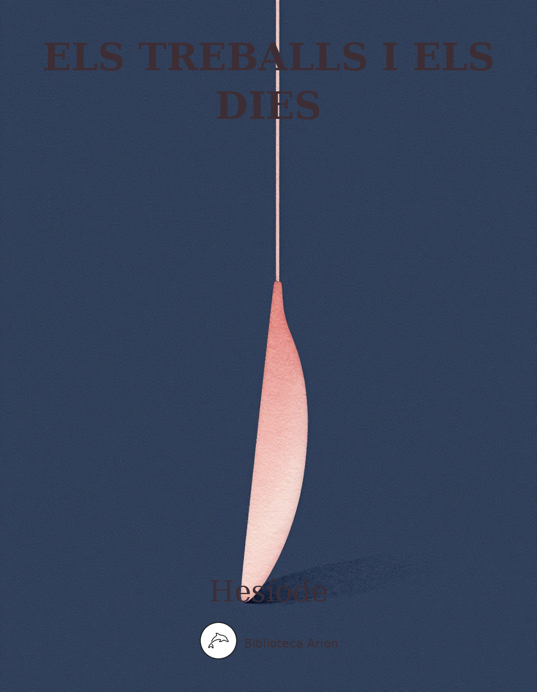

Els treballs i els dies
Ἔργα καὶ Ἡμέραι
Poema didàctic sobre el treball agrícola, la justícia divina i la vida quotidiana a la Grècia arcaica. Hesíode s'adreça al seu germà Perses per ensenyar-li els valors del treball honest, intercalant mites (Prometeu, Pandora, les cinc races) amb consells pràctics sobre agricultura, navegació i vida social.
μοῦσαι Πιερίηθεν ἀοιδῇσιν κλείουσαι δεῦτε, Δίʼ ἐννέπετε, σφέτερον πατέρʼ ὑμνείουσαι· ὅντε διὰ βροτοὶ ἄνδρες ὁμῶς ἄφατοί τε φατοί τε, ῥητοί τʼ ἄρρητοί τε Διὸς μεγάλοιο ἕκητι. ῥέα μὲν γὰρ βριάει, ῥέα δὲ βριάοντα χαλέπτει, ῥεῖα δʼ ἀρίζηλον μινύθει καὶ ἄδηλον ἀέξει, ῥεῖα δέ τʼ ἰθύνει σκολιὸν καὶ ἀγήνορα κάρφει Ζεὺς ὑψιβρεμέτης, ὃς ὑπέρτατα δώματα ναίει. κλῦθι ἰδὼν ἀίων τε, δίκῃ δʼ ἴθυνε θέμιστας τύνη· ἐγὼ δέ κε, Πέρση, ἐτήτυμα μυθησαίμην. οὐκ ἄρα μοῦνον ἔην Ἐρίδων γένος, ἀλλʼ ἐπὶ γαῖαν εἰσὶ δύω· τὴν μέν κεν ἐπαινέσσειε νοήσας, ἣ δʼ ἐπιμωμητή· διὰ δʼ ἄνδιχα θυμὸν ἔχουσιν. ἣ μὲν γὰρ πόλεμόν τε κακὸν καὶ δῆριν ὀφέλλει, σχετλίη· οὔτις τήν γε φιλεῖ βροτός, ἀλλʼ ὑπʼ ἀνάγκης ἀθανάτων βουλῇσιν Ἔριν τιμῶσι βαρεῖαν. τὴν δʼ ἑτέρην προτέρην μὲν ἐγείνατο Νὺξ ἐρεβεννή, θῆκε δέ μιν Κρονίδης ὑψίζυγος, αἰθέρι ναίων, γαίης ἐν ῥίζῃσι, καὶ ἀνδράσι πολλὸν ἀμείνω· ἥτε καὶ ἀπάλαμόν περ ὁμῶς ἐπὶ ἔργον ἔγειρεν. εἰς ἕτερον γάρ τίς τε ἰδὼν ἔργοιο χατίζει πλούσιον, ὃς σπεύδει μὲν ἀρώμεναι ἠδὲ φυτεύειν οἶκόν τʼ εὖ θέσθαι· ζηλοῖ δέ τε γείτονα γείτων εἰς ἄφενος σπεύδοντʼ· ἀγαθὴ δʼ Ἔρις ἥδε βροτοῖσιν. καὶ κεραμεὺς κεραμεῖ κοτέει καὶ τέκτονι τέκτων, καὶ πτωχὸς πτωχῷ φθονέει καὶ ἀοιδὸς ἀοιδῷ. ὦ Πέρση, σὺ δὲ ταῦτα τεῷ ἐνικάτθεο θυμῷ, μηδέ σʼ Ἔρις κακόχαρτος ἀπʼ ἔργου θυμὸν ἐρύκοι νείκεʼ ὀπιπεύοντʼ ἀγορῆς ἐπακουὸν ἐόντα. ὤρη γάρ τʼ ὀλίγη πέλεται νεικέων τʼ ἀγορέων τε, ᾧτινι μὴ βίος ἔνδον ἐπηετανὸς κατάκειται ὡραῖος, τὸν γαῖα φέρει, Δημήτερος ἀκτήν. τοῦ κε κορεσσάμενος νείκεα καὶ δῆριν ὀφέλλοις κτήμασʼ ἐπʼ ἀλλοτρίοις· σοὶ δʼ οὐκέτι δεύτερον ἔσται ὧδʼ ἔρδειν· ἀλλʼ αὖθι διακρινώμεθα νεῖκος ἰθείῃσι δίκῃς, αἵ τʼ ἐκ Διός εἰσιν ἄρισται. ἤδη μὲν γὰρ κλῆρον ἐδασσάμεθʼ, ἀλλὰ τὰ πολλὰ ἁρπάζων ἐφόρεις μέγα κυδαίνων βασιλῆας δωροφάγους, οἳ τήνδε δίκην ἐθέλουσι δίκασσαι. νήπιοι, οὐδὲ ἴσασιν ὅσῳ πλέον ἥμισυ παντὸς οὐδʼ ὅσον ἐν μαλάχῃ τε καὶ ἀσφοδέλῳ μέγʼ ὄνειαρ. κρύψαντες γὰρ ἔχουσι θεοὶ βίον ἀνθρώποισιν· ῥηιδίως γάρ κεν καὶ ἐπʼ ἤματι ἐργάσσαιο, ὥστε σε κεἰς ἐνιαυτὸν ἔχειν καὶ ἀεργὸν ἐόντα· αἶψά κε πηδάλιον μὲν ὑπὲρ καπνοῦ καταθεῖο, ἔργα βοῶν δʼ ἀπόλοιτο καὶ ἡμιόνων ταλαεργῶν. ἀλλὰ Ζεὺς ἔκρυψε χολωσάμενος φρεσὶν ᾗσιν, ὅττι μιν ἐξαπάτησε Προμηθεὺς ἀγκυλομήτης· τοὔνεκʼ ἄρʼ ἀνθρώποισιν ἐμήσατο κήδεα λυγρά. κρύψε δὲ πῦρ· τὸ μὲν αὖτις ἐὺς πάις Ἰαπετοῖο ἔκλεψʼ ἀνθρώποισι Διὸς πάρα μητιόεντος ἐν κοῒλῳ νάρθηκι λαθὼν Δία τερπικέραυνον. τὸν δὲ χολωσάμενος προσέφη νεφεληγερέτα Ζευς· Ἰαπετιονίδη, πάντων πέρι μήδεα εἰδώς, χαίρεις πῦρ κλέψας καὶ ἐμὰς φρένας ἠπεροπεύσας, σοί τʼ αὐτῷ μέγα πῆμα καὶ ἀνδράσιν ἐσσομένοισιν. τοῖς δʼ ἐγὼ ἀντὶ πυρὸς δώσω κακόν, ᾧ κεν ἅπαντες τέρπωνται κατὰ θυμὸν ἑὸν κακὸν ἀμφαγαπῶντες. ὣς ἔφατʼ· ἐκ δʼ ἐγέλασσε πατὴρ ἀνδρῶν τε θεῶν τε. Ἥφαιστον δʼ ἐκέλευσε περικλυτὸν ὅττι τάχιστα γαῖαν ὕδει φύρειν, ἐν δʼ ἀνθρώπου θέμεν αὐδὴν καὶ σθένος, ἀθανάτῃς δὲ θεῇς εἰς ὦπα ἐίσκειν παρθενικῆς καλὸν εἶδος ἐπήρατον· αὐτὰρ Ἀθήνην ἔργα διδασκῆσαι, πολυδαίδαλον ἱστὸν ὑφαίνειν· καὶ χάριν ἀμφιχέαι κεφαλῇ χρυσέην Ἀφροδίτην καὶ πόθον ἀργαλέον καὶ γυιοβόρους μελεδώνας· ἐν δὲ θέμεν κύνεόν τε νόον καὶ ἐπίκλοπον ἦθος Ἑρμείην ἤνωγε, διάκτορον Ἀργεϊφόντην. ὣς ἔφαθʼ· οἳ δʼ ἐπίθοντο Διὶ Κρονίωνι ἄνακτι. αὐτίκα δʼ ἐκ γαίης πλάσσεν κλυτὸς Ἀμφιγυήεις παρθένῳ αἰδοίῃ ἴκελον Κρονίδεω διὰ βουλάς· ζῶσε δὲ καὶ κόσμησε θεὰ γλαυκῶπις Ἀθήνη· ἀμφὶ δέ οἱ Χάριτές τε θεαὶ καὶ πότνια Πειθὼ ὅρμους χρυσείους ἔθεσαν χροΐ· ἀμφὶ δὲ τήν γε Ὧραι καλλίκομοι στέφον ἄνθεσιν εἰαρινοῖσιν· πάντα δέ οἱ χροῒ κόσμον ἐφήρμοσε Παλλὰς Ἀθήνη. ἐν δʼ ἄρα οἱ στήθεσσι διάκτορος Ἀργεϊφόντης ψεύδεά θʼ αἱμυλίους τε λόγους καὶ ἐπίκλοπον ἦθος τεῦξε Διὸς βουλῇσι βαρυκτύπου· ἐν δʼ ἄρα φωνὴν θῆκε θεῶν κῆρυξ, ὀνόμηνε δὲ τήνδε γυναῖκα Πανδώρην, ὅτι πάντες Ὀλύμπια δώματʼ ἔχοντες δῶρον ἐδώρησαν, πῆμʼ ἀνδράσιν ἀλφηστῇσιν. αὐτὰρ ἐπεὶ δόλον αἰπὺν ἀμήχανον ἐξετέλεσσεν, εἰς Ἐπιμηθέα πέμπε πατὴρ κλυτὸν Ἀργεϊφόντην δῶρον ἄγοντα, θεῶν ταχὺν ἄγγελον· οὐδʼ Ἐπιμηθεὺς ἐφράσαθʼ, ὥς οἱ ἔειπε Προμηθεὺς μή ποτε δῶρον δέξασθαι πὰρ Ζηνὸς Ὀλυμπίου, ἀλλʼ ἀποπέμπειν ἐξοπίσω, μή πού τι κακὸν θνητοῖσι γένηται. αὐτὰρ ὃ δεξάμενος, ὅτε δὴ κακὸν εἶχʼ, ἐνόησεν. Πρὶν μὲν γὰρ ζώεσκον ἐπὶ χθονὶ φῦλʼ ἀνθρώπων νόσφιν ἄτερ τε κακῶν καὶ ἄτερ χαλεποῖο πόνοιο νούσων τʼ ἀργαλέων, αἵ τʼ ἀνδράσι Κῆρας ἔδωκαν. αἶψα γὰρ ἐν κακότητι βροτοὶ καταγηράσκουσιν. ἀλλὰ γυνὴ χείρεσσι πίθου μέγα πῶμʼ ἀφελοῦσα ἐσκέδασʼ· ἀνθρώποισι δʼ ἐμήσατο κήδεα λυγρά. μούνη δʼ αὐτόθι Ἐλπὶς ἐν ἀρρήκτοισι δόμοισιν ἔνδον ἔμιμνε πίθου ὑπὸ χείλεσιν, οὐδὲ θύραζε ἐξέπτη· πρόσθεν γὰρ ἐπέλλαβε πῶμα πίθοιο αἰγιόχου βουλῇσι Διὸς νεφεληγερέταο. ἄλλα δὲ μυρία λυγρὰ κατʼ ἀνθρώπους ἀλάληται· πλείη μὲν γὰρ γαῖα κακῶν, πλείη δὲ θάλασσα· νοῦσοι δʼ ἀνθρώποισιν ἐφʼ ἡμέρῃ, αἳ δʼ ἐπὶ νυκτὶ αὐτόματοι φοιτῶσι κακὰ θνητοῖσι φέρουσαι σιγῇ, ἐπεὶ φωνὴν ἐξείλετο μητίετα Ζεύς. οὕτως οὔτι πη ἔστι Διὸς νόον ἐξαλέασθαι. εἰ δʼ ἐθέλεις, ἕτερόν τοι ἐγὼ λόγον ἐκκορυφώσω εὖ καὶ ἐπισταμένως· σὺ δʼ ἐνὶ φρεσὶ βάλλεο σῇσιν. ὡς ὁμόθεν γεγάασι θεοὶ θνητοί τʼ ἄνθρωποι. χρύσεον μὲν πρώτιστα γένος μερόπων ἀνθρώπων ἀθάνατοι ποίησαν Ὀλύμπια δώματʼ ἔχοντες. οἳ μὲν ἐπὶ Κρόνου ἦσαν, ὅτʼ οὐρανῷ ἐμβασίλευεν· ὥστε θεοὶ δʼ ἔζωον ἀκηδέα θυμὸν ἔχοντες νόσφιν ἄτερ τε πόνων καὶ ὀιζύος· οὐδέ τι δειλὸν γῆρας ἐπῆν, αἰεὶ δὲ πόδας καὶ χεῖρας ὁμοῖοι τέρποντʼ ἐν θαλίῃσι κακῶν ἔκτοσθεν ἁπάντων· θνῇσκον δʼ ὥσθʼ ὕπνῳ δεδμημένοι· ἐσθλὰ δὲ πάντα τοῖσιν ἔην· καρπὸν δʼ ἔφερε ζείδωρος ἄρουρα αὐτομάτη πολλόν τε καὶ ἄφθονον· οἳ δʼ ἐθελημοὶ ἥσυχοι ἔργʼ ἐνέμοντο σὺν ἐσθλοῖσιν πολέεσσιν. ἀφνειοὶ μήλοισι, φίλοι μακάρεσσι θεοῖσιν. αὐτὰρ ἐπεὶ δὴ τοῦτο γένος κατὰ γαῖʼ ἐκάλυψε,— τοὶ μὲν δαίμονες ἁγνοὶ ἐπιχθόνιοι καλέονται ἐσθλοί, ἀλεξίκακοι, φύλακες θνητῶν ἀνθρώπων, οἵ ῥα φυλάσσουσίν τε δίκας καὶ σχέτλια ἔργα ἠέρα ἑσσάμενοι πάντη φοιτῶντες ἐπʼ αἶαν, πλουτοδόται· καὶ τοῦτο γέρας βασιλήιον ἔσχον—, δεύτερον αὖτε γένος πολὺ χειρότερον μετόπισθεν ἀργύρεον ποίησαν Ὀλύμπια δώματʼ ἔχοντες, χρυσέῳ οὔτε φυὴν ἐναλίγκιον οὔτε νόημα. ἀλλʼ ἑκατὸν μὲν παῖς ἔτεα παρὰ μητέρι κεδνῇ ἐτρέφετʼ ἀτάλλων, μέγα νήπιος, ᾧ ἐνὶ οἴκῳ. ἀλλʼ ὅτʼ ἄρʼ ἡβήσαι τε καὶ ἥβης μέτρον ἵκοιτο, παυρίδιον ζώεσκον ἐπὶ χρόνον, ἄλγεʼ ἔχοντες ἀφραδίῃς· ὕβριν γὰρ ἀτάσθαλον οὐκ ἐδύναντο ἀλλήλων ἀπέχειν, οὐδʼ ἀθανάτους θεραπεύειν ἤθελον οὐδʼ ἔρδειν μακάρων ἱεροῖς ἐπὶ βωμοῖς, ἣ θέμις ἀνθρώποις κατὰ ἤθεα. τοὺς μὲν ἔπειτα Ζεὺς Κρονίδης ἔκρυψε χολούμενος, οὕνεκα τιμὰς οὐκ ἔδιδον μακάρεσσι θεοῖς, οἳ Ὄλυμπον ἔχουσιν. αὐτὰρ ἐπεὶ καὶ τοῦτο γένος κατὰ γαῖʼ ἐκάλυψε,— τοὶ μὲν ὑποχθόνιοι μάκαρες θνητοῖς καλέονται, δεύτεροι, ἀλλʼ ἔμπης τιμὴ καὶ τοῖσιν ὀπηδεῖ—, Ζεὺς δὲ πατὴρ τρίτον ἄλλο γένος μερόπων ἀνθρώπων χάλκειον ποίησʼ, οὐκ ἀργυρέῳ οὐδὲν ὁμοῖον, ἐκ μελιᾶν, δεινόν τε καὶ ὄβριμον· οἷσιν Ἄρηος ἔργʼ ἔμελεν στονόεντα καὶ ὕβριες· οὐδέ τι σῖτον ἤσθιον, ἀλλʼ ἀδάμαντος ἔχον κρατερόφρονα θυμόν, ἄπλαστοι· μεγάλη δὲ βίη καὶ χεῖρες ἄαπτοι ἐξ ὤμων ἐπέφυκον ἐπὶ στιβαροῖσι μέλεσσιν. ὧν δʼ ἦν χάλκεα μὲν τεύχεα, χάλκεοι δέ τε οἶκοι χαλκῷ δʼ εἰργάζοντο· μέλας δʼ οὐκ ἔσκε σίδηρος. καὶ τοὶ μὲν χείρεσσιν ὕπο σφετέρῃσι δαμέντες βῆσαν ἐς εὐρώεντα δόμον κρυεροῦ Αίδαο νώνυμνοι· θάνατος δὲ καὶ ἐκπάγλους περ ἐόντας εἷλε μέλας, λαμπρὸν δʼ ἔλιπον φάος ἠελίοιο. αὐτὰρ ἐπεὶ καὶ τοῦτο γένος κατὰ γαῖʼ ἐκάλυψεν, αὖτις ἔτʼ ἄλλο τέταρτον ἐπὶ χθονὶ πουλυβοτείρῃ Ζεὺς Κρονίδης ποίησε, δικαιότερον καὶ ἄρειον, ἀνδρῶν ἡρώων θεῖον γένος, οἳ καλέονται ἡμίθεοι, προτέρη γενεὴ κατʼ ἀπείρονα γαῖαν. καὶ τοὺς μὲν πόλεμός τε κακὸς καὶ φύλοπις αἰνή, τοὺς μὲν ὑφʼ ἑπταπύλῳ Θήβῃ, Καδμηίδι γαίῃ, ὤλεσε μαρναμένους μήλων ἕνεκʼ Οἰδιπόδαο, τοὺς δὲ καὶ ἐν νήεσσιν ὑπὲρ μέγα λαῖτμα θαλάσσης ἐς Τροίην ἀγαγὼν Ἑλένης ἕνεκʼ ἠυκόμοιο. ἔνθʼ ἤτοι τοὺς μὲν θανάτου τέλος ἀμφεκάλυψε, τοῖς δὲ δίχʼ ἀνθρώπων βίοτον καὶ ἤθεʼ ὀπάσσας Ζεὺς Κρονίδης κατένασσε πατὴρ ἐς πείρατα γαίης. καὶ τοὶ μὲν ναίουσιν ἀκηδέα θυμὸν ἔχοντες ἐν μακάρων νήσοισι παρʼ Ὠκεανὸν βαθυδίνην, ὄλβιοι ἥρωες, τοῖσιν μελιηδέα καρπὸν τρὶς ἔτεος θάλλοντα φέρει ζείδωρος ἄρουρα. τηλοῦ ἀπʼ ἀθανάτων· τοῖσιν Κρόνος ἐμβασιλεύει. τοῦ γὰρ δεσμὸν ἔλυσε πατὴρ ἀνδρῶν τε θεῶν τε. τοῖσι δʼ ὁμῶς νεάτοις τιμὴ καὶ κῦδος ὀπηδεῖ. Πέμπτον δʼ αὖτις ἔτʼ ἄλλο γένος θῆκʼ εὐρύοπα Ζεὺς ἀνδρῶν, οἳ γεγάασιν ἐπὶ χθονὶ πουλυβοτείρῃ. μηκέτʼ ἔπειτʼ ὤφελλον ἐγὼ πέμπτοισι μετεῖναι ἀνδράσιν, ἀλλʼ ἢ πρόσθε θανεῖν ἢ ἔπειτα γενέσθαι. νῦν γὰρ δὴ γένος ἐστὶ σιδήρεον· οὐδέ ποτʼ ἦμαρ παύονται καμάτου καὶ ὀιζύος, οὐδέ τι νύκτωρ φθειρόμενοι. χαλεπὰς δὲ θεοὶ δώσουσι μερίμνας· ἀλλʼ ἔμπης καὶ τοῖσι μεμείξεται ἐσθλὰ κακοῖσιν. Ζεὺς δʼ ὀλέσει καὶ τοῦτο γένος μερόπων ἀνθρώπων, εὖτʼ ἂν γεινόμενοι πολιοκρόταφοι τελέθωσιν. οὐδὲ πατὴρ παίδεσσιν ὁμοίιος οὐδέ τι παῖδες, οὐδὲ ξεῖνος ξεινοδόκῳ καὶ ἑταῖρος ἑταίρῳ, οὐδὲ κασίγνητος φίλος ἔσσεται, ὡς τὸ πάρος περ. αἶψα δὲ γηράσκοντας ἀτιμήσουσι τοκῆας· μέμψονται δʼ ἄρα τοὺς χαλεποῖς βάζοντες ἔπεσσι σχέτλιοι οὐδὲ θεῶν ὄπιν εἰδότες· οὐδέ κεν οἵ γε γηράντεσσι τοκεῦσιν ἀπὸ θρεπτήρια δοῖεν χειροδίκαι· ἕτερος δʼ ἑτέρου πόλιν ἐξαλαπάξει. οὐδέ τις εὐόρκου χάρις ἔσσεται οὔτε δικαίου οὔτʼ ἀγαθοῦ, μᾶλλον δὲ κακῶν ῥεκτῆρα καὶ ὕβριν ἀνέρες αἰνήσουσι· δίκη δʼ ἐν χερσί, καὶ αἰδὼς οὐκ ἔσται· βλάψει δʼ ὁ κακὸς τὸν ἀρείονα φῶτα μύθοισιν σκολιοῖς ἐνέπων, ἐπὶ δʼ ὅρκον ὀμεῖται. ζῆλος δʼ ἀνθρώποισιν ὀιζυροῖσιν ἅπασι δυσκέλαδος κακόχαρτος ὁμαρτήσει, στυγερώπης. καὶ τότε δὴ πρὸς Ὄλυμπον ἀπὸ χθονὸς εὐρυοδείης λευκοῖσιν φάρεσσι καλυψαμένα χρόα καλὸν ἀθανάτων μετὰ φῦλον ἴτον προλιπόντʼ ἀνθρώπους Αἰδὼς καὶ Νέμεσις· τὰ δὲ λείψεται ἄλγεα λυγρὰ θνητοῖς ἀνθρώποισι· κακοῦ δʼ οὐκ ἔσσεται ἀλκή. νῦν δʼ αἶνον βασιλεῦσιν ἐρέω φρονέουσι καὶ αὐτοῖς· ὧδʼ ἴρηξ προσέειπεν ἀηδόνα ποικιλόδειρον ὕψι μάλʼ ἐν νεφέεσσι φέρων ὀνύχεσσι μεμαρπώς· ἣ δʼ ἐλεόν, γναμπτοῖσι πεπαρμένη ἀμφʼ ὀνύχεσσι, μύρετο· τὴν ὅγʼ ἐπικρατέως πρὸς μῦθον ἔειπεν· δαιμονίη, τί λέληκας; ἔχει νύ σε πολλὸν ἀρείων· τῇ δʼ εἶς, ᾗ σʼ ἂν ἐγώ περ ἄγω καὶ ἀοιδὸν ἐοῦσαν· δεῖπνον δʼ, αἴ κʼ ἐθέλω, ποιήσομαι ἠὲ μεθήσω. ἄφρων δʼ, ὅς κʼ ἐθέλῃ πρὸς κρείσσονας ἀντιφερίζειν· νίκης τε στέρεται πρός τʼ αἴσχεσιν ἄλγεα πάσχει. ὣς ἔφατʼ ὠκυπέτης ἴρηξ, τανυσίπτερος ὄρνις. ὦ Πέρση, σὺ δʼ ἄκουε δίκης, μηδʼ ὕβριν ὄφελλε· ὕβρις γάρ τε κακὴ δειλῷ βροτῷ· οὐδὲ μὲν ἐσθλὸς ῥηιδίως φερέμεν δύναται, βαρύθει δέ θʼ ὑπʼ αὐτῆς ἐγκύρσας ἄτῃσιν· ὁδὸς δʼ ἑτέρηφι παρελθεῖν κρείσσων ἐς τὰ δίκαια· Δίκη δʼ ὑπὲρ Ὕβριος ἴσχει ἐς τέλος ἐξελθοῦσα· παθὼν δέ τε νήπιος ἔγνω. αὐτίκα γὰρ τρέχει Ὅρκος ἅμα σκολιῇσι δίκῃσιν. τῆς δὲ Δίκης ῥόθος ἑλκομένης, ᾗ κʼ ἄνδρες ἄγωσι δωροφάγοι, σκολιῇς δὲ δίκῃς κρίνωσι θέμιστας. ἣ δʼ ἕπεται κλαίουσα πόλιν καὶ ἤθεα λαῶν, ἠέρα ἑσσαμένη, κακὸν ἀνθρώποισι φέρουσα, οἵ τε μιν ἐξελάσωσι καὶ οὐκ ἰθεῖαν ἔνειμαν. Οἳ δὲ δίκας ξείνοισι καὶ ἐνδήμοισι διδοῦσιν ἰθείας καὶ μή τι παρεκβαίνουσι δικαίου, τοῖσι τέθηλε πόλις, λαοὶ δʼ ἀνθεῦσιν ἐν αὐτῇ· εἰρήνη δʼ ἀνὰ γῆν κουροτρόφος, οὐδέ ποτʼ αὐτοῖς ἀργαλέον πόλεμον τεκμαίρεται εὐρύοπα Ζεύς· οὐδέ ποτʼ ἰθυδίκῃσι μετʼ ἀνδράσι λιμὸς ὀπηδεῖ οὐδʼ ἄτη, θαλίῃς δὲ μεμηλότα ἔργα νέμονται. τοῖσι φέρει μὲν γαῖα πολὺν βίον, οὔρεσι δὲ δρῦς ἄκρη μέν τε φέρει βαλάνους, μέσση δὲ μελίσσας· εἰροπόκοι δʼ ὄιες μαλλοῖς καταβεβρίθασιν· τίκτουσιν δὲ γυναῖκες ἐοικότα τέκνα γονεῦσιν· θάλλουσιν δʼ ἀγαθοῖσι διαμπερές· οὐδʼ ἐπὶ νηῶν νίσσονται, καρπὸν δὲ φέρει ζείδωρος ἄρουρα. οἷς δʼ ὕβρις τε μέμηλε κακὴ καὶ σχέτλια ἔργα, τοῖς δὲ δίκην Κρονίδης τεκμαίρεται εὐρύοπα Ζεύς. πολλάκι καὶ ξύμπασα πόλις κακοῦ ἀνδρὸς ἀπηύρα, ὅς κεν ἀλιτραίνῃ καὶ ἀτάσθαλα μηχανάαται. τοῖσιν δʼ οὐρανόθεν μέγʼ ἐπήγαγε πῆμα Κρονίων λιμὸν ὁμοῦ καὶ λοιμόν· ἀποφθινύθουσι δὲ λαοί. οὐδὲ γυναῖκες τίκτουσιν, μινύθουσι δὲ οἶκοι Ζηνὸς φραδμοσύνῃσιν Ὀλυμπίου· ἄλλοτε δʼ αὖτε ἢ τῶν γε στρατὸν εὐρὺν ἀπώλεσεν ἢ ὅ γε τεῖχος ἢ νέας ἐν πόντῳ Κρονίδης ἀποαίνυται αὐτῶν. ὦ βασιλῆς, ὑμεῖς δὲ καταφράζεσθε καὶ αὐτοὶ τήνδε δίκην· ἐγγὺς γὰρ ἐν ἀνθρώποισιν ἐόντες ἀθάνατοι φράζονται, ὅσοι σκολιῇσι δίκῃσιν ἀλλήλους τρίβουσι θεῶν ὄπιν οὐκ ἀλέγοντες. τρὶς γὰρ μύριοί εἰσιν ἐπὶ χθονὶ πουλυβοτείρῃ ἀθάνατοι Ζηνὸς φύλακες θνητῶν ἀνθρώπων· οἵ ῥα φυλάσσουσίν τε δίκας καὶ σχέτλια ἔργα ἠέρα ἑσσάμενοι, πάντη φοιτῶντες ἐπʼ αἶαν. ἡ δέ τε παρθένος ἐστὶ Δίκη, Διὸς ἐκγεγαυῖα, κυδρή τʼ αἰδοίη τε θεῶν, οἳ Ὄλυμπον ἔχουσιν. καί ῥʼ ὁπότʼ ἄν τίς μιν βλάπτῃ σκολιῶς ὀνοτάζων, αὐτίκα πὰρ Διὶ πατρὶ καθεζομένη Κρονίωνι γηρύετʼ ἀνθρώπων ἄδικον νόον, ὄφρʼ ἀποτίσῃ δῆμος ἀτασθαλίας βασιλέων, οἳ λυγρὰ νοεῦντες ἄλλῃ παρκλίνωσι δίκας σκολιῶς ἐνέποντες. ταῦτα φυλασσόμενοι, βασιλῆς, ἰθύνετε †δίκας δωροφάγοι, σκολιέων δὲ δικέων ἐπὶ πάγχυ λάθεσθε. οἷ γʼ αὐτῷ κακὰ τεύχει ἀνὴρ ἄλλῳ κακὰ τεύχων, ἡ δὲ κακὴ βουλὴ τῷ βουλεύσαντι κακίστη. πάντα ἰδὼν Διὸς ὀφθαλμὸς καὶ πάντα νοήσας καί νυ τάδʼ, αἴ κʼ ἐθέλῃσʼ, ἐπιδέρκεται, οὐδέ ἑ λήθει, οἵην δὴ καὶ τήνδε δίκην πόλις ἐντὸς ἐέργει. νῦν δὴ ἐγὼ μήτʼ αὐτὸς ἐν ἀνθρώποισι δίκαιος εἴην μήτʼ ἐμὸς υἱός· ἐπεὶ κακὸν ἄνδρα δίκαιον ἔμμεναι, εἰ μείζω γε δίκην ἀδικώτερος ἕξει· ἀλλὰ τά γʼ οὔ πω ἔολπα τελεῖν Δία μητιόεντα. ὦ Πέρση, σὺ δὲ ταῦτα μετὰ φρεσὶ βάλλεο σῇσι, καὶ νυ δίκης ἐπάκουε, βίης δʼ ἐπιλήθεο πάμπαν. τόνδε γὰρ ἀνθρώποισι νόμον διέταξε Κρονίων ἰχθύσι μὲν καὶ θηρσὶ καὶ οἰωνοῖς πετεηνοῖς ἐσθέμεν ἀλλήλους, ἐπεὶ οὐ δίκη ἐστὶ μετʼ αὐτοῖς· ἀνθρώποισι δʼ ἔδωκε δίκην, ἣ πολλὸν ἀρίστη γίγνεται· εἰ γάρ τίς κʼ ἐθέλῃ τὰ δίκαιʼ ἀγορεῦσαι γιγνώσκων, τῷ μέν τʼ ὄλβον διδοῖ εὐρύοπα Ζεύς· ὃς δέ κε μαρτυρίῃσι ἑκὼν ἐπίορκον ὀμόσσας ψεύσεται, ἐν δὲ δίκην βλάψας νήκεστον ἀασθῇ, τοῦ δέ τʼ ἀμαυροτέρη γενεὴ μετόπισθε λέλειπται· ἀνδρὸς δʼ εὐόρκου γενεὴ μετόπισθεν ἀμείνων. σοὶ δʼ ἐγὼ ἐσθλὰ νοέων ἐρέω, μέγα νήπιε Πέρση. τὴν μέν τοι κακότητα καὶ ἰλαδὸν ἔστιν ἑλέσθαι ῥηιδίως· λείη μὲν ὁδός, μάλα δʼ ἐγγύθι ναίει· τῆς δʼ ἀρετῆς ἱδρῶτα θεοὶ προπάροιθεν ἔθηκαν ἀθάνατοι· μακρὸς δὲ καὶ ὄρθιος οἶμος ἐς αὐτὴν καὶ τρηχὺς τὸ πρῶτον· ἐπὴν δʼ εἰς ἄκρον ἵκηται, ῥηιδίη δὴ ἔπειτα πέλει, χαλεπή περ ἐοῦσα. οὗτος μὲν πανάριστος, ὃς αὐτὸς πάντα νοήσῃ φρασσάμενος, τά κʼ ἔπειτα καὶ ἐς τέλος ᾖσιν ἀμείνω· ἐσθλὸς δʼ αὖ κἀκεῖνος, ὃς εὖ εἰπόντι πίθηται· ὃς δέ κε μήτʼ αὐτὸς νοέῃ μήτʼ ἄλλου ἀκούων ἐν θυμῷ βάλληται, ὃ δʼ αὖτʼ ἀχρήιος ἀνήρ. ἀλλὰ σύ γʼ ἡμετέρης μεμνημένος αἰὲν ἐφετμῆς ἐργάζευ, Πέρση, δῖον γένος, ὄφρα σε λιμὸς ἐχθαίρῃ, φιλέῃ δέ σʼ ἐυστέφανος Δημήτηρ αἰδοίη, βιότου δὲ τεὴν πιμπλῇσι καλιήν· λιμὸς γάρ τοι πάμπαν ἀεργῷ σύμφορος ἀνδρί. τῷ δὲ θεοὶ νεμεσῶσι καὶ ἀνέρες, ὅς κεν ἀεργὸς ζώῃ, κηφήνεσσι κοθούροις εἴκελος ὀργήν, οἵ τε μελισσάων κάματον τρύχουσιν ἀεργοὶ ἔσθοντες· σοὶ δʼ ἔργα φίλʼ ἔστω μέτρια κοσμεῖν, ὥς κέ τοι ὡραίου βιότου πλήθωσι καλιαί. ἐξ ἔργων δʼ ἄνδρες πολύμηλοί τʼ ἀφνειοί τε· καὶ ἐργαζόμενοι πολὺ φίλτεροι ἀθανάτοισιν. ἔργον δʼ οὐδὲν ὄνειδος, ἀεργίη δέ τʼ ὄνειδος. εἰ δέ κε ἐργάζῃ, τάχα σε ζηλώσει ἀεργὸς πλουτεῦντα· πλούτῳ δʼ ἀρετὴ καὶ κῦδος ὀπηδεῖ. δαίμονι δʼ οἷος ἔησθα, τὸ ἐργάζεσθαι ἄμεινον, εἴ κεν ἀπʼ ἀλλοτρίων κτεάνων ἀεσίφρονα θυμὸν εἰς ἔργον τρέψας μελετᾷς βίου, ὥς σε κελεύω. αἰδὼς δʼ οὐκ ἀγαθὴ κεχρημένον ἄνδρα κομίζει, αἰδώς, ἥ τʼ ἄνδρας μέγα σίνεται ἠδʼ ὀνίνησιν. αἰδώς τοι πρὸς ἀνολβίῃ, θάρσος δὲ πρὸς ὄλβῳ. χρήματα δʼ οὐχ ἁρπακτά, θεόσδοτα πολλὸν ἀμείνω. εἰ γάρ τις καὶ χερσὶ βίῃ μέγαν ὄλβον ἕληται, ἢ ὅ γʼ ἀπὸ γλώσσης ληίσσεται, οἷά τε πολλὰ γίγνεται, εὖτʼ ἂν δὴ κέρδος νόον ἐξαπατήσῃ ἀνθρώπων, αἰδῶ δέ τʼ ἀναιδείη κατοπάζῃ· ῥεῖα δέ μιν μαυροῦσι θεοί, μινύθουσι δὲ οἶκον ἀνέρι τῷ, παῦρον δέ τʼ ἐπὶ χρόνον ὄλβος ὀπηδεῖ. ἶσον δʼ ὅς θʼ ἱκέτην ὅς τε ξεῖνον κακὸν ἔρξῃ, ὅς τε κασιγνήτοιο ἑοῦ ἀνὰ δέμνια βαίνῃ κρυπταδίης εὐνῆς ἀλόχου, παρακαίρια ῥέζων, ὅς τέ τευ ἀφραδίῃς ἀλιταίνεται ὀρφανὰ τέκνα, ὅς τε γονῆα γέροντα κακῷ ἐπὶ γήραος οὐδῷ νεικείῃ χαλεποῖσι καθαπτόμενος ἐπέεσσιν· τῷ δʼ ἦ τοι Ζεὺς αὐτὸς ἀγαίεται, ἐς δὲ τελευτὴν ἔργων ἀντʼ ἀδίκων χαλεπὴν ἐπέθηκεν ἀμοιβήν. ἀλλὰ σὺ τῶν μὲν πάμπαν ἔεργʼ ἀεσίφρονα θυμόν. κὰδ δύναμιν δʼ ἔρδειν ἱέρʼ ἀθανάτοισι θεοῖσιν ἁγνῶς καὶ καθαρῶς, ἐπὶ δʼ ἀγλαὰ μηρία καίειν· ἄλλοτε δὲ σπονδῇσι θύεσσί τε ἱλάσκεσθαι, ἠμὲν ὅτʼ εὐνάζῃ καὶ ὅτʼ ἂν φάος ἱερὸν ἔλθῃ, ὥς κέ τοι ἵλαον κραδίην καὶ θυμὸν ἔχωσιν, ὄφρʼ ἄλλων ὠνῇ κλῆρον, μὴ τὸν τεὸν ἄλλος. τὸν φιλέοντʼ ἐπὶ δαῖτα καλεῖν, τὸν δʼ ἐχθρὸν ἐᾶσαι· τὸν δὲ μάλιστα καλεῖν, ὅς τις σέθεν ἐγγύθι ναίει· εἰ γάρ τοι καὶ χρῆμʼ ἐγχώριον ἄλλο γένηται, γείτονες ἄζωστοι ἔκιον, ζώσαντο δὲ πηοί. πῆμα κακὸς γείτων, ὅσσον τʼ ἀγαθὸς μέγʼ ὄνειαρ. ἔμμορέ τοι τιμῆς, ὅς τʼ ἔμμορε γείτονος ἐσθλοῦ. οὐδʼ ἂν βοῦς ἀπόλοιτʼ, εἰ μὴ γείτων κακὸς εἴη. εὖ μὲν μετρεῖσθαι παρὰ γείτονος, εὖ δʼ ἀποδοῦναι, αὐτῷ τῷ μέτρῳ, καὶ λώιον, αἴ κε δύνηαι, ὡς ἂν χρηίζων καὶ ἐς ὕστερον ἄρκιον εὕρῃς. μὴ κακὰ κερδαίνειν· κακὰ κέρδεα ἶσʼ ἀάτῃσιν. τὸν φιλέοντα φιλεῖν, καὶ τῷ προσιόντι προσεῖναι. καὶ δόμεν, ὅς κεν δῷ, καὶ μὴ δόμεν, ὅς κεν μὴ δῷ. δώτῃ μέν τις ἔδωκεν, ἀδώτῃ δʼ οὔτις ἔδωκεν. δὼς ἀγαθή, ἅρπαξ δὲ κακή, θανάτοιο δότειρα. ὃς μὲν γάρ κεν ἀνὴρ ἐθέλων, ὅ γε, κεἰ μέγα δοίη, χαίρει τῷ δώρῳ καὶ τέρπεται ὃν κατὰ θυμόν· ὃς δέ κεν αὐτὸς ἕληται ἀναιδείηφι πιθήσας, καί τε σμικρὸν ἐόν, τό γʼ ἐπάχνωσεν φίλον ἦτορ. ὃς δʼ ἐπʼ ἐόντι φέρει, ὃ δʼ ἀλέξεται αἴθοπα λιμόν· εἰ γάρ κεν καὶ σμικρὸν ἐπὶ σμικρῷ καταθεῖο καὶ θαμὰ τοῦτʼ ἔρδοις, τάχα κεν μέγα καὶ τὸ γένοιτο. οὐδὲ τό γʼ ἐν οἴκῳ κατακείμενον ἀνέρα κήδει. οἴκοι βέλτερον εἶναι, ἐπεὶ βλαβερὸν τὸ θύρηφιν. ἐσθλὸν μὲν παρεόντος ἑλέσθαι, πῆμα δὲ θυμῷ χρηίζειν ἀπεόντος, ἅ σε φράζεσθαι ἄνωγα. ἀρχομένου δὲ πίθου καὶ λήγοντος κορέσασθαι, μεσσόθι φείδεσθαι· δειλὴ δʼ ἐνὶ πυθμένι φειδώ. μισθὸς δʼ ἀνδρὶ φίλῳ εἰρημένος ἄρκιος ἔστω. καί τε κασιγνήτῳ γελάσας ἐπὶ μάρτυρα θέσθαι. πίστεις γάρ τοι ὁμῶς καὶ ἀπιστίαι ὤλεσαν ἄνδρας. μὴ δὲ γυνή σε νόον πυγοστόλος ἐξαπατάτω αἱμύλα κωτίλλουσα, τεὴν διφῶσα καλιήν. ὃς δὲ γυναικὶ πέποιθε, πέποιθʼ ὅ γε φηλήτῃσιν. μουνογενὴς δὲ πάις εἴη πατρώιον οἶκον φερβέμεν ὣς γὰρ πλοῦτος ἀέξεται ἐν μεγάροισιν. γηραιὸς δὲ θάνοις ἕτερον παῖδʼ ἐγκαταλείπων. ῥεῖα δέ κεν πλεόνεσσι πόροι Ζεὺς ἄσπετον ὄλβον. πλείων μὲν πλεόνων μελέτη, μείζων δʼ ἐπιθήκη. σοὶ δʼ εἰ πλούτου θυμὸς ἐέλδεται ἐν φρεσὶν ᾗσιν, ὧδʼ ἔρδειν, καὶ ἔργον ἐπʼ ἔργῳ ἐργάζεσθαι. πληιάδων Ἀτλαγενέων ἐπιτελλομενάων ἄρχεσθʼ ἀμήτου, ἀρότοιο δὲ δυσομενάων. αἳ δή τοι νύκτας τε καὶ ἤματα τεσσαράκοντα κεκρύφαται, αὖτις δὲ περιπλομένου ἐνιαυτοῦ φαίνονται τὰ πρῶτα χαρασσομένοιο σιδήρου. οὗτός τοι πεδίων πέλεται νόμος, οἵ τε θαλάσσης ἐγγύθι ναιετάουσʼ, οἵ τʼ ἄγκεα βησσήεντα, πόντου κυμαίνοντος ἀπόπροθι, πίονα χῶρον ναίουσιν· γυμνὸν σπείρειν, γυμνὸν δὲ βοωτεῖν, γυμνὸν δʼ ἀμάειν, εἴ χʼ ὥρια πάντʼ ἐθέλῃσθα ἔργα κομίζεσθαι Δημήτερος· ὥς τοι ἕκαστα ὥριʼ ἀέξηται, μή πως τὰ μέταζε χατίζων πτώσσῃς ἀλλοτρίους οἴκους καὶ μηδὲν ἀνύσσῃς. ὡς καὶ νῦν ἐπʼ ἔμʼ ἦλθες· ἐγὼ δέ τοι οὐκ ἐπιδώσω οὐδʼ ἐπιμετρήσω· ἐργάζευ, νήπιε Πέρση, ἔργα, τά τʼ ἀνθρώποισι θεοὶ διετεκμήραντο, μή ποτε σὺν παίδεσσι γυναικί τε θυμὸν ἀχεύων ζητεύῃς βίοτον κατὰ γείτονας, οἳ δʼ ἀμελῶσιν. δὶς μὲν γὰρ καὶ τρὶς τάχα τεύξεαι· ἢν δʼ ἔτι λυπῇς, χρῆμα μὲν οὐ πρήξεις, σὺ δʼ ἐτώσια πόλλʼ ἀγορεύσεις· ἀχρεῖος δʼ ἔσται ἐπέων νομός. ἀλλά σʼ ἄνωγα φράζεσθαι χρειῶν τε λύσιν λιμοῦ τʼ ἀλεωρήν. οἶκον μὲν πρώτιστα γυναῖκά τε βοῦν τʼ ἀροτῆρα, κτητήν, οὐ γαμετήν, ἥτις καὶ βουσὶν ἕποιτο, χρήματα δʼ ἐν οἴκῳ πάντʼ ἄρμενα ποιήσασθαι, μὴ σὺ μὲν αἰτῇς ἄλλον, ὃ δʼ ἀρνῆται, σὺ δὲ τητᾷ, ἡ δʼ ὥρη παραμείβηται, μινύθῃ δὲ τὸ ἔργον. μηδʼ ἀναβάλλεσθαι ἔς τʼ αὔριον ἔς τε ἔνηφιν· οὐ γὰρ ἐτωσιοεργὸς ἀνὴρ πίμπλησι καλιὴν οὐδʼ ἀναβαλλόμενος· μελέτη δὲ τὸ ἔργον ὀφέλλει· αἰεὶ δʼ ἀμβολιεργὸς ἀνὴρ ἄτῃσι παλαίει. ἦμος δὴ λήγει μένος ὀξέος ἠελίοιο καύματος ἰδαλίμου, μετοπωρινὸν ὀμβρήσαντος Ζηνὸς ἐρισθενέος, μετὰ δὲ τρέπεται βρότεος χρὼς πολλὸν ἐλαφρότερος· δὴ γὰρ τότε Σείριος ἀστὴρ βαιὸν ὑπὲρ κεφαλῆς κηριτρεφέων ἀνθρώπων ἔρχεται ἠμάτιος, πλεῖον δέ τε νυκτὸς ἐπαυρεῖ· τῆμος ἀδηκτοτάτη πέλεται τμηθεῖσα σιδήρῳ ὕλη, φύλλα δʼ ἔραζε χέει, πτόρθοιό τε λήγει· τῆμος ἄρʼ ὑλοτομεῖν μεμνημένος ὥρια ἔργα. ὄλμον μὲν τριπόδην τάμνειν, ὕπερον δὲ τρίπηχυν, ἄξονα δʼ ἑπταπόδην· μάλα γάρ νύ τοι ἄρμενον οὕτω· εἰ δέ κεν ὀκταπόδην, ἀπὸ καὶ σφῦράν κε τάμοιο. τρισπίθαμον δʼ ἄψιν τάμνειν δεκαδώρῳ ἀμάξῃ. πόλλʼ ἐπικαμπύλα κᾶλα· φέρειν δὲ γύην, ὅτʼ ἂν εὕρῃς, ἐς οἶκον, κατʼ ὄρος διζήμενος ἢ κατʼ ἄρουραν, πρίνινον· ὃς γὰρ βουσὶν ἀροῦν ὀχυρώτατός ἐστιν, εὖτʼ ἂν Ἀθηναίης δμῷος ἐν ἐλύματι πήξας γόμφοισιν πελάσας προσαρήρεται ἱστοβοῆι. δοιὰ δὲ θέσθαι ἄροτρα, πονησάμενος κατὰ οἶκον, αὐτόγυον καὶ πηκτόν, ἐπεὶ πολὺ λώιον οὕτω· εἴ χʼ ἕτερον ἄξαις, ἕτερόν κʼ ἐπὶ βουσὶ βάλοιο. δάφνης δʼ ἢ πτελέης ἀκιώτατοι ἱστοβοῆες, δρυὸς ἔλυμα, γύης πρίνου· βόε δʼ ἐνναετήρω ἄρσενε κεκτῆσθαι, τῶν γὰρ σθένος οὐκ ἀλαπαδνόν, ἥβης μέτρον ἔχοντε· τὼ ἐργάζεσθαι ἀρίστω. οὐκ ἂν τώ γʼ ἐρίσαντε ἐν αὔλακι κὰμ μὲν ἄροτρον ἄξειαν, τὸ δὲ ἔργον ἐτώσιον αὖθι λίποιεν. τοῖς δʼ ἅμα τεσσαρακονταετὴς αἰζηὸς ἕποιτο ἄρτον δειπνήσας τετράτρυφον, ὀκτάβλωμον, ὃς ἔργου μελετῶν ἰθεῖάν κʼ αὔλακʼ ἐλαύνοι, μηκέτι παπταίνων μεθʼ ὁμήλικας, ἀλλʼ ἐπὶ ἔργῳ θυμὸν ἔχων· τοῦ δʼ οὔτι νεώτερος ἄλλος ἀμείνων σπέρματα δάσσασθαι καὶ ἐπισπορίην ἀλέασθαι. κουρότερος γὰρ ἀνὴρ μεθʼ ὁμήλικας ἐπτοίηται. φράζεσθαι δʼ, εὖτʼ ἂν γεράνου φωνὴν ἐπακούσῃς ὑψόθεν ἐκ νεφέων ἐνιαύσια κεκληγυίης· ἥτʼ ἀρότοιό τε σῆμα φέρει καὶ χείματος ὥρην δεικνύει ὀμβρηροῦ· κραδίην δʼ ἔδακʼ ἀνδρὸς ἀβούτεω· δὴ τότε χορτάζειν ἕλικας βόας ἔνδον ἐόντας· ῥηίδιον γὰρ ἔπος εἰπεῖν· βόε δὸς καὶ ἄμαξαν· ῥηίδιον δʼ ἀπανήνασθαι· πάρα ἔργα βόεσσιν. φησὶ δʼ ἀνὴρ φρένας ἀφνειὸς πήξασθαι ἄμαξαν, νήπιος, οὐδὲ τὸ οἶδʼ· ἑκατὸν δέ τε δούρατʼ ἀμάξης, τῶν πρόσθεν μελέτην ἐχέμεν οἰκήια θέσθαι. εὖτʼ ἂν δὲ πρώτιστʼ ἄροτος θνητοῖσι φανείῃ, δὴ τότʼ ἐφορμηθῆναι ὁμῶς δμῶές τε καὶ αὐτὸς αὔην καὶ διερὴν ἀρόων ἀρότοιο καθʼ ὥρην, πρωὶ μάλα σπεύδων, ἵνα τοι πλήθωσιν ἄρουραι. ἦρι πολεῖν· θέρεος δὲ νεωμένη οὔ σʼ ἀπατήσει. νειὸν δὲ σπείρειν ἔτι κουφίζουσαν ἄρουραν· νειὸς ἀλεξιάρη παίδων εὐκηλήτειρα. εὔχεσθαι δὲ Διὶ χθονίῳ Δημήτερί θʼ ἁγνῇ, ἐκτελέα βρίθειν Δημήτερος ἱερὸν ἀκτήν, ἀρχόμενος τὰ πρῶτʼ ἀρότου, ὅτʼ ἂν ἄκρον ἐχέτλης χειρὶ λαβὼν ὅρπηκα βοῶν ἐπὶ νῶτον ἵκηαι ἔνδρυον ἑλκόντων μεσάβων. ὁ δὲ τυτθὸς ὄπισθε δμῷος ἔχων μακέλην πόνον ὀρνίθεσσι τιθείη σπέρμα κατακρύπτων· ἐυθημοσύνη γὰρ ἀρίστη θνητοῖς ἀνθρώποις, κακοθημοσύνη δὲ κακίστη. ὧδέ κεν ἀδροσύνῃ στάχυες νεύοιεν ἔραζε, εἰ τέλος αὐτὸς ὄπισθεν Ὀλύμπιος ἐσθλὸν ὀπάζοι, ἐκ δʼ ἀγγέων ἐλάσειας ἀράχνια· καί σε ἔολπα γηθήσειν βιότου αἰρεύμενον ἔνδον ἐόντος. εὐοχθέων δʼ ἵξεαι πολιὸν ἔαρ, οὐδὲ πρὸς ἄλλους αὐγάσεαι· σέο δʼ ἄλλος ἀνὴρ κεχρημένος ἔσται. εἰ δέ κεν ἠελίοιο τροπῇς ἀρόῳς χθόνα δῖαν, ἥμενος ἀμήσεις ὀλίγον περὶ χειρὸς ἐέργων, ἀντία δεσμεύων κεκονιμένος, οὐ μάλα χαίρων, οἴσεις δʼ ἐν φορμῷ· παῦροι δέ σε θηήσονται. ἄλλοτε δʼ ἀλλοῖος Ζηνὸς νόος αἰγιόχοιο, ἀργαλέος δʼ ἄνδρεσσι καταθνητοῖσι νοῆσαι. εἰ δέ κεν ὄψʼ ἀρόσῃς, τόδε κέν τοι φάρμακον εἴη· ἦμος κόκκυξ κοκκύζει δρυὸς ἐν πετάλοισι τὸ πρῶτον, τέρπει δὲ βροτοὺς ἐπʼ ἀπείρονα γαῖαν, τῆμος Ζεὺς ὕοι τρίτῳ ἤματι μηδʼ ἀπολήγοι, μήτʼ ἄρʼ ὑπερβάλλων βοὸς ὁπλὴν μήτʼ ἀπολείπων· οὕτω κʼ ὀψαρότης πρῳηρότῃ ἰσοφαρίζοι. ἐν θυμῷ δʼ εὖ πάντα φυλάσσεο· μηδέ σε λήθοι μήτʼ ἔαρ γιγνόμενον πολιὸν μήθʼ ὥριος ὄμβρος. πὰρ δʼ ἴθι χάλκειον θῶκον καὶ ἐπαλέα λέσχην ὥρῃ χειμερίῃ, ὁπότε κρύος ἀνέρα ἔργων ἰσχάνει, ἔνθα κʼ ἄοκνος ἀνὴρ μέγα οἶκον ὀφέλλοι, μή σε κακοῦ χειμῶνος ἀμηχανίη καταμάρψῃ σὺν πενίῃ, λεπτῇ δὲ παχὺν πόδα χειρὶ πιέζῃς. πολλὰ δʼ ἀεργὸς ἀνήρ, κενεὴν ἐπὶ ἐλπίδα μίμνων, χρηίζων βιότοιο, κακὰ προσελέξατο θυμῷ. ἐλπὶς δʼ οὐκ ἀγαθὴ κεχρημένον ἄνδρα κομίζει, ἥμενον ἐν λέσχῃ, τῷ μὴ βίος ἄρκιος εἴη. δείκνυε δὲ δμώεσσι θέρευς ἔτι μέσσου ἐόντος· οὐκ αἰεὶ θέρος ἐσσεῖται, ποιεῖσθε καλιάς. μῆνα δὲ Ληναιῶνα, κάκʼ ἤματα, βουδόρα πάντα, τοῦτον ἀλεύασθαι, καὶ πηγάδας, αἵτʼ ἐπὶ γαῖαν πνεύσαντος Βορέαο δυσηλεγέες τελέθουσιν, ὅστε διὰ Θρῄκης ἱπποτρόφου εὐρέι πόντῳ ἐμπνεύσας ὤρινε· μέμυκε δὲ γαῖα καὶ ὕλη· πολλὰς δὲ δρῦς ὑψικόμους ἐλάτας τε παχείας οὔρεος ἐν βήσσῃς πιλνᾷ χθονὶ πουλυβοτείρῃ ἐμπίπτων, καὶ πᾶσα βοᾷ τότε νήριτος ὕλη. θῆρες δὲ φρίσσουσʼ, οὐρὰς δʼ ὑπὸ μέζεʼ ἔθεντο, τῶν καὶ λάχνῃ δέρμα κατάσκιον· ἀλλά νυ καὶ τῶν ψυχρὸς ἐὼν διάησι δασυστέρνων περ ἐόντων. καί τε διὰ ῥινοῦ βοὸς ἔρχεται, οὐδέ μιν ἴσχει· καί τε διʼ αἶγα ἄησι τανύτριχα· πώεα δʼ οὔ τι, οὕνεκʼ ἐπηεταναὶ τρίχες αὐτῶν, οὐ διάησιν ἲς ἀνέμου Βορέου· τροχαλὸν δὲ γέροντα τίθησιν. καὶ διὰ παρθενικῆς ἁπαλόχροος οὐ διάησιν, ἥτε δόμων ἔντοσθε φίλῃ παρὰ μητέρι μίμνει οὔ πω ἔργα ἰδυῖα πολυχρύσου Ἀφροδίτης· εὖ τε λοεσσαμένη τέρενα χρόα καὶ λίπʼ ἐλαίῳ χρισαμένη μυχίη καταλέξεται ἔνδοθι οἴκου ἤματι χειμερίῳ, ὅτʼ ἀνόστεος ὃν πόδα τένδει ἔν τʼ ἀπύρῳ οἴκῳ καὶ ἤθεσι λευγαλέοισιν. οὐδέ οἱ ἠέλιος δείκνυ νομὸν ὁρμηθῆναι· ἀλλʼ ἐπὶ κυανέων ἀνδρῶν δῆμόν τε πόλιν τε στρωφᾶται, βράδιον δὲ Πανελλήνεσσι φαείνει. καὶ τότε δὴ κεραοὶ καὶ νήκεροι ὑληκοῖται λυγρὸν μυλιόωντες ἀνὰ δρία βησσήεντα φεύγουσιν· καὶ πᾶσιν ἐνὶ φρεσὶ τοῦτο μέμηλεν, ὡς σκέπα μαιόμενοι πυκινοὺς κευθμῶνας ἔχωσι καὶ γλάφυ πετρῆεν· τότε δὴ τρίποδι βροτῷ ἶσοι, οὗ τʼ ἐπὶ νῶτα ἔαγε, κάρη δʼ εἰς οὖδας ὁρᾶται, τῷ ἴκελοι φοιτῶσιν, ἀλευόμενοι νίφα λευκήν. καὶ τότε ἕσσασθαι ἔρυμα χροός, ὥς σε κελεύω, χλαῖνάν τε μαλακὴν καὶ τερμιόεντα χιτῶνα· στήμονι δʼ ἐν παύρῳ πολλὴν κρόκα μηρύσασθαι· τὴν περιέσσασθαι, ἵνα τοι τρίχες ἀτρεμέωσι, μηδʼ ὀρθαὶ φρίσσωσιν ἀειρόμεναι κατὰ σῶμα. ἀμφὶ δὲ ποσσὶ πέδιλα βοὸς ἶφι κταμένοιο ἄρμενα δήσασθαι, πίλοις ἔντοσθε πυκάσσας. πρωτογόνων δʼ ἐρίφων, ὁπότʼ ἂν κρύος ὥριον ἔλθῃ, δέρματα συρράπτειν νεύρῳ βοός, ὄφρʼ ἐπὶ νώτῳ ὑετοῦ ἀμφιβάλῃ ἀλέην· κεφαλῆφι δʼ ὕπερθεν πῖλον ἔχειν ἀσκητόν, ἵνʼ οὔατα μὴ καταδεύῃ· ψυχρὴ γάρ τʼ ἠὼς πέλεται Βορέαο πεσόντος ἠώιος δʼ ἐπὶ γαῖαν ἀπʼ οὐρανοῦ ἀστερόεντος ἀὴρ πυροφόρος τέταται μακάρων ἐπὶ ἔργοις· ὅστε ἀρυσάμενος ποταμῶν ἄπο αἰεναόντων, ὑψοῦ ὑπὲρ γαίης ἀρθεὶς ἀνέμοιο θυέλλῃ ἄλλοτε μέν θʼ ὕει ποτὶ ἕσπερον, ἄλλοτʼ ἄησι πυκνὰ Θρηικίου Βορέου νέφεα κλονέοντος. τὸν φθάμενος ἔργον τελέσας οἶκόνδε νέεσθαι, μή ποτέ σʼ οὐρανόθεν σκοτόεν νέφος ἀμφικαλύψῃ, χρῶτα δὲ μυδαλέον θήῃ κατά θʼ εἵματα δεύσῃ. ἀλλʼ ὑπαλεύασθαι· μεὶς γὰρ χαλεπώτατος οὗτος, χειμέριος, χαλεπὸς προβάτοις, χαλεπὸς δʼ ἀνθρώποις. τῆμος τὤμισυ βουσίν, ἐπʼ ἀνέρι δὲ πλέον εἴη ἁρμαλιῆς· μακραὶ γὰρ ἐπίρροθοι εὐφρόναι εἰσίν. ταῦτα φυλασσόμενος τετελεσμένον εἰς ἐνιαυτὸν ἰσοῦσθαι νύκτας τε καὶ ἤματα, εἰσόκεν αὖτις γῆ πάντων μήτηρ καρπὸν σύμμικτον ἐνείκῃ. εὖτʼ ἂν δʼ ἑξήκοντα μετὰ τροπὰς ἠελίοιο χειμέριʼ ἐκτελέσῃ Ζεὺς ἤματα, δή ῥα τότʼ ἀστὴρ Ἀρκτοῦρος προλιπὼν ἱερὸν ῥόον Ὠκεανοῖο πρῶτον παμφαίνων ἐπιτέλλεται ἀκροκνέφαιος. τὸν δὲ μέτʼ ὀρθογόη Πανδιονὶς ὦρτο χελιδὼν ἐς φάος ἀνθρώποις, ἔαρος νέον ἱσταμένοιο. τὴν φθάμενος οἴνας περταμνέμεν· ὣς γὰρ ἄμεινον. ἀλλʼ ὁπότʼ ἂν φερέοικος ἀπὸ χθονὸς ἂμ φυτὰ βαίνῃ Πληιάδας φεύγων, τότε δὴ σκάφος οὐκέτι οἰνέων· ἀλλʼ ἅρπας τε χαρασσέμεναι καὶ δμῶας ἐγείρειν· φεύγειν δὲ σκιεροὺς θώκους καὶ ἐπʼ ἠόα κοῖτον ὥρῃ ἐν ἀμήτου, ὅτε τʼ ἠέλιος χρόα κάρφει. τημοῦτος σπεύδειν καὶ οἴκαδε καρπὸν ἀγινεῖν ὄρθρου ἀνιστάμενος, ἵνα τοι βίος ἄρκιος εἴη. ἠὼς γὰρ ἔργοιο τρίτην ἀπομείρεται αἶσαν, ἠώς τοι προφέρει μὲν ὁδοῦ, προφέρει δὲ καὶ ἔργου, ἠώς, ἥτε φανεῖσα πολέας ἐπέβησε κελεύθου ἀνθρώπους πολλοῖσί τʼ ἐπὶ ζυγὰ βουσὶ τίθησιν. ἦμος δὲ σκόλυμός τʼ ἀνθεῖ καὶ ἠχέτα τέττιξ δενδρέῳ ἐφεζόμενος λιγυρὴν καταχεύετʼ ἀοιδὴν πυκνὸν ὑπὸ πτερύγων, θέρεος καματώδεος ὥρῃ, τῆμος πιόταταί τʼ αἶγες καὶ οἶνος ἄριστος, μαχλόταται δὲ γυναῖκες, ἀφαυρότατοι δέ τοι ἄνδρες εἰσίν, ἐπεὶ κεφαλὴν καὶ γούνατα Σείριος ἄζει, αὐαλέος δέ τε χρὼς ὑπὸ καύματος· ἀλλὰ τότʼ ἤδη εἴη πετραίη τε σκιὴ καὶ βίβλινος οἶνος, μάζα τʼ ἀμολγαίη γάλα τʼ αἰγῶν σβεννυμενάων, καὶ βοὸς ὑλοφάγοιο κρέας μή πω τετοκυίης πρωτογόνων τʼ ἐρίφων· ἐπὶ δʼ αἴθοπα πινέμεν οἶνον, ἐν σκιῇ ἑζόμενον, κεκορημένον ἦτορ ἐδωδῆς, ἀντίον ἀκραέος Ζεφύρου τρέψαντα πρόσωπα, κρήνης τʼ αἰενάου καὶ ἀπορρύτου, ἥτʼ ἀθόλωτος, τρὶς ὕδατος προχέειν, τὸ δὲ τέτρατον ἱέμεν οἴνου. δμωσὶ δʼ ἐποτρύνειν Δημήτερος ἱερὸν ἀκτὴν δινέμεν, εὖτʼ ἂν πρῶτα φανῇ σθένος Ὠαρίωνος, χώρῳ ἐν εὐαέι καὶ ἐυτροχάλῳ ἐν ἀλωῇ. μέτρῳ δʼ εὖ κομίσασθαι ἐν ἄγγεσιν· αὐτὰρ ἐπὴν δὴ πάντα βίον κατάθηαι ἐπάρμενον ἔνδοθι οἴκου, θῆτά τʼ ἄοικον ποιεῖσθαι καὶ ἄτεκνον ἔριθον δίζησθαι κέλομαι· χαλεπὴ δʼ ὑπόπορτις ἔριθος· καὶ κύνα καρχαρόδοντα κομεῖν, μὴ φείδεο σίτου, μή ποτέ σʼ ἡμερόκοιτος ἀνὴρ ἀπὸ χρήμαθʼ ἕληται. χόρτον δʼ ἐσκομίσαι καὶ συρφετόν, ὄφρα τοι εἴη βουσὶ καὶ ἡμιόνοισιν ἐπηετανόν. αὐτὰρ ἔπειτα δμῶας ἀναψῦξαι φίλα γούνατα καὶ βόε λῦσαι. εὖτʼ ἂν δʼ Ὠαρίων καὶ Σείριος ἐς μέσον ἔλθῃ οὐρανόν, Ἀρκτοῦρον δʼ ἐσίδῃ ῥοδοδάκτυλος Ηώς, ὦ Πέρση, τότε πάντας ἀποδρέπεν οἴκαδε βότρυς· δεῖξαι δʼ ἠελίῳ δέκα τʼ ἤματα καὶ δέκα νύκτας, πέντε δὲ συσκιάσαι, ἕκτῳ δʼ εἰς ἄγγεʼ ἀφύσσαι δῶρα Διωνύσου πολυγηθέος. αὐτὰρ ἐπὴν δὴ Πληιάδες θʼ Ὑάδες τε τό τε σθένος Ὠαρίωνος δύνωσιν, τότʼ ἔπειτʼ ἀρότου μεμνημένος εἶναι ὡραίου· πλειὼν δὲ κατὰ χθονὸς ἄρμενος εἶσιν. εἰ δέ σε ναυτιλίης δυσπεμφέλου ἵμερος αἱρεῖ, εὖτʼ ἂν Πληιάδες σθένος ὄβριμον Ὠαρίωνος φεύγουσαι πίπτωσιν ἐς ἠεροειδέα πόντον, δὴ τότε παντοίων ἀνέμων θυίουσιν ἀῆται· καὶ τότε μηκέτι νῆας ἔχειν ἐνὶ οἴνοπι πόντῳ, γῆν ἐργάζεσθαι μεμνημένος, ὥς σε κελεύω. νῆα δʼ ἐπʼ ἠπείρου ἐρύσαι πυκάσαι τε λίθοισι πάντοθεν, ὄφρʼ ἴσχωσʼ ἀνέμων μένος ὑγρὸν ἀέντων, χείμαρον ἐξερύσας, ἵνα μὴ πύθῃ Διὸς ὄμβρος. ὅπλα δʼ ἐπάρμενα πάντα τεῷ ἐγκάτθεο οἴκῳ εὐκόσμως στολίσας νηὸς πτερὰ ποντοπόροιο· πηδάλιον δʼ ἐυεργὲς ὑπὲρ καπνοῦ κρεμάσασθαι. αὐτὸς δʼ ὡραῖον μίμνειν πλόον, εἰσόκεν ἔλθῃ· καὶ τότε νῆα θοὴν ἅλαδʼ ἑλκέμεν, ἐν δέ τε φόρτον ἄρμενον ἐντύνασθαι, ἵνʼ οἴκαδε κέρδος ἄρηαι, ὥς περ ἐμός τε πατὴρ καὶ σός, μέγα νήπιε Πέρσῃ, πλωίζεσκʼ ἐν νηυσί, βίου κεχρημένος ἐσθλοῦ· ὅς ποτε καὶ τῇδʼ ἦλθε, πολὺν διὰ πόντον ἀνύσσας, Κύμην Αἰολίδα προλιπών, ἐν νηὶ μελαίνῃ· οὐκ ἄφενος φεύγων οὐδὲ πλοῦτόν τε καὶ ὄλβον, ἀλλὰ κακὴν πενίην, τὴν Ζεὺς ἄνδρεσσι δίδωσιν· νάσσατο δʼ ἄγχʼ Ἑλικῶνος ὀιζυρῇ ἐνὶ κώμῃ, Ἄσκρῃ, χεῖμα κακῇ, θέρει ἀργαλέῃ, οὐδέ ποτʼ ἐσθλῇ. τύνη δʼ, ὦ Πέρση, ἔργων μεμνημένος εἶναι ὡραίων πάντων, περὶ ναυτιλίης δὲ μάλιστα. νῆʼ ὀλίγην αἰνεῖν, μεγάλῃ δʼ ἐνὶ φορτία θέσθαι. μείζων μὲν φόρτος, μεῖζον δʼ ἐπὶ κέρδεϊ κέρδος ἔσσεται, εἴ κʼ ἄνεμοί γε κακὰς ἀπέχωσιν ἀήτας. εὖτʼ ἂν ἐπʼ ἐμπορίην τρέψας ἀεσίφρονα θυμὸν βούληαι χρέα τε προφυγεῖν καὶ λιμὸν ἀτερπέα, δείξω δή τοι μέτρα πολυφλοίσβοιο θαλάσσης, οὔτε τι ναυτιλίης σεσοφισμένος οὔτε τι νηῶν. οὐ γάρ πώ ποτε νηί γʼ ἐπέπλων εὐρέα πόντον, εἰ μὴ ἐς Εὔβοιαν ἐξ Αὐλίδος, ᾗ ποτʼ Ἀχαιοὶ μείναντες χειμῶνα πολὺν σὺν λαὸν ἄγειραν Ἑλλάδος ἐξ ἱερῆς Τροίην ἐς καλλιγύναικα. ἔνθα δʼ ἐγὼν ἐπʼ ἄεθλα δαΐφρονος Ἀμφιδάμαντος Χαλκίδα τʼ εἲς ἐπέρησα· τὰ δὲ προπεφραδμένα πολλὰ ἄεθλʼ ἔθεσαν παῖδες μεγαλήτορος· ἔνθα μέ φημι ὕμνῳ νικήσαντα φέρειν τρίποδʼ ὠτώεντα. τὸν μὲν ἐγὼ Μούσῃς Ἑλικωνιάδεσσʼ ἀνέθηκα, ἔνθα με τὸ πρῶτον λιγυρῆς ἐπέβησαν ἀοιδῆς. τόσσον τοι νηῶν γε πεπείρημαι πολυγόμφων· ἀλλὰ καὶ ὣς ἐρέω Ζηνὸς νόον αἰγιόχοιο· Μοῦσαι γάρ μʼ ἐδίδαξαν ἀθέσφατον ὕμνον ἀείδειν. ἤματα πεντήκοντα μετὰ τροπὰς ἠελίοιο, ἐς τέλος ἐλθόντος θέρεος καματώδεος ὥρης, ὡραῖος πέλεται θνητοῖς πλόος· οὔτε κε νῆα καυάξαις οὔτʼ ἄνδρας ἀποφθείσειε θάλασσα, εἰ δὴ μὴ πρόφρων γε Ποσειδάων ἐνοσίχθων ἢ Ζεὺς ἀθανάτων βασιλεὺς ἐθέλῃσιν ὀλέσσαι· ἐν τοῖς γὰρ τέλος ἐστὶν ὁμῶς ἀγαθῶν τε κακῶν τε. τῆμος δʼ εὐκρινέες τʼ αὖραι καὶ πόντος ἀπήμων· εὔκηλος τότε νῆα θοὴν ἀνέμοισι πιθήσας ἑλκέμεν ἐς πόντον φόρτον τʼ ἐς πάντα τίθεσθαι, σπεύδειν δʼ ὅττι τάχιστα πάλιν οἶκόνδε νέεσθαι· μηδὲ μένειν οἶνόν τε νέον καὶ ὀπωρινὸν ὄμβρον καὶ χειμῶνʼ ἐπιόντα Νότοιό τε δεινὰς ἀήτας, ὅστʼ ὤρινε θάλασσαν ὁμαρτήσας Διὸς ὄμβρῳ πολλῷ ὀπωρινῷ, χαλεπὸν δέ τε πόντον ἔθηκεν. ἄλλος δʼ εἰαρινὸς πέλεται πλόος ἀνθρώποισιν· ἦμος δὴ τὸ πρῶτον, ὅσον τʼ ἐπιβᾶσα κορώνη ἴχνος ἐποίησεν, τόσσον πέταλʼ ἀνδρὶ φανείῃ ἐν κράδῃ ἀκροτάτῃ, τότε δʼ ἄμβατός ἐστι θάλασσα· εἰαρινὸς δʼ οὗτος πέλεται πλόος. οὔ μιν ἔγωγε αἴνημʼ· οὐ γὰρ ἐμῷ θυμῷ κεχαρισμένος ἐστίν· ἁρπακτός· χαλεπῶς κε φύγοις κακόν· ἀλλά νυ καὶ τὰ ἄνθρωποι ῥέζουσιν ἀιδρείῃσι νόοιο· χρήματα γὰρ ψυχὴ πέλεται δειλοῖσι βροτοῖσιν. δεινὸν δʼ ἐστὶ θανεῖν μετὰ κύμασιν. ἀλλά σʼ ἄνωγα φράζεσθαι τάδε πάντα μετὰ φρεσίν, ὡς ἀγορεύω. μηδʼ ἐν νηυσὶν ἅπαντα βίον κοΐλῃσι τίθεσθαι· ἀλλὰ πλέω λείπειν, τὰ δὲ μείονα φορτίζεσθαι. δεινὸν γὰρ πόντου μετὰ κύμασι πήματι κύρσαι. δεινὸν δʼ, εἴ κʼ ἐπʼ ἄμαξαν ὑπέρβιον ἄχθος ἀείρας ἄξονα. καυάξαις καὶ φορτία μαυρωθείη. μέτρα φυλάσσεσθαι· καιρὸς δʼ ἐπὶ πᾶσιν ἄριστος. ὡραῖος δὲ γυναῖκα τεὸν ποτὶ οἶκον ἄγεσθαι, μήτε τριηκόντων ἐτέων μάλα πόλλʼ ἀπολείπων μήτʼ ἐπιθεὶς μάλα πολλά· γάμος δέ τοι ὥριος οὗτος· ἡ δὲ γυνὴ τέτορʼ ἡβώοι, πέμπτῳ δὲ γαμοῖτο. παρθενικὴν δὲ γαμεῖν, ὥς κʼ ἤθεα κεδνὰ διδάξῃς. τὴν δὲ μάλιστα γαμεῖν, ἥ τις σέθεν ἐγγύθι ναίει, πάντα μάλʼ ἀμφιιδών, μὴ γείτοσι χάρματα γήμῃς. οὐ μὲν γάρ τι γυναικὸς ἀνὴρ ληίζετʼ ἄμεινον τῆς ἀγαθῆς, τῆς δʼ αὖτε κακῆς οὐ ῥίγιον ἄλλο, δειπνολόχης· ἥτʼ ἄνδρα καὶ ἴφθιμόν περ ἐόντα εὕει ἄτερ δαλοῖο καὶ ὠμῷ γήραϊ δῶκεν. εὖ δʼ ὄπιν ἀθανάτων μακάρων πεφυλαγμένος εἶναι. μηδὲ κασιγνήτῳ ἶσον ποιεῖσθαι ἑταῖρον· εἰ δέ κε ποιήσῃς, μή μιν πρότερος κακὸν ἔρξῃς. μηδὲ ψεύδεσθαι γλώσσης χάριν· εἰ δὲ σέ γʼ ἄρχῃ ἤ τι ἔπος εἰπὼν ἀποθύμιον ἠὲ καὶ ἔρξας, δὶς τόσα τίνυσθαι μεμνημένος· εἰ δὲ σέ γʼ αὖτις ἡγῆτʼ ἐς φιλότητα, δίκην δʼ ἐθέλῃσι παρασχεῖν, δέξασθαι· δειλός τοι ἀνὴρ φίλον ἄλλοτε ἄλλον ποιεῖται, σὲ δὲ μή τι νόον κατελεγχέτω εἶδος. μηδὲ πολύξεινον μηδʼ ἄξεινον καλέεσθαι, μηδὲ κακῶν ἕταρον μηδʼ ἐσθλῶν νεικεστῆρα. μηδέ ποτʼ οὐλομένην πενίην θυμοφθόρον ἀνδρὶ τέτλαθʼ ὀνειδίζειν, μακάρων δόσιν αἰὲν ἐόντων. γλώσσης τοι θησαυρὸς ἐν ἀνθρώποισιν ἄριστος φειδωλῆς, πλείστη δὲ χάρις κατὰ μέτρον ἰούσης. εἰ δὲ κακὸν εἴποις, τάχα κʼ αὐτὸς μεῖζον ἀκούσαις. μηδὲ πολυξείνου δαιτὸς δυσπέμφελος εἶναι ἐκ κοινοῦ· πλείστη δὲ χάρις, δαπάνη τʼ ὀλιγίστη. μηδέ ποτʼ ἐξ ἠοῦς Διὶ λειβέμεν αἴθοπα οἶνον χερσὶν ἀνίπτοισιν μηδʼ ἄλλοις ἀθανάτοισιν· οὐ γὰρ τοί γε κλύουσιν, ἀποπτύουσι δέ τʼ ἀράς. μηδʼ ἄντʼ ἠελίου τετραμμένος ὀρθὸς ὀμιχεῖν· αὐτὰρ ἐπεί κε δύῃ, μεμνημένος, ἔς τʼ ἀνιόντα· μήτʼ ἐν ὁδῷ μήτʼ ἐκτὸς ὁδοῦ προβάδην οὐρήσῃς μηδʼ ἀπογυμνωθείς· μακάρων τοι νύκτες ἔασιν· ἑζόμενος δʼ ὅ γε θεῖος ἀνήρ, πεπνυμένα εἰδώς, ἢ ὅ γε πρὸς τοῖχον πελάσας ἐυερκέος αὐλῆς. μηδʼ αἰδοῖα γονῇ πεπαλαγμένος ἔνδοθι οἴκου ἱστίῃ ἐμπελαδὸν παραφαινέμεν, ἀλλʼ ἀλέασθαι. μηδʼ ἀπὸ δυσφήμοιο τάφου ἀπονοστήσαντα σπερμαίνειν γενεήν, ἀλλʼ ἀθανάτων ἀπὸ δαιτός. μηδέ ποτʼ αἰενάων ποταμῶν καλλίρροον ὕδωρ ποσσὶ περᾶν, πρίν γʼ εὔξῃ ἰδὼν ἐς καλὰ ῥέεθρα, χεῖρας νιψάμενος πολυηράτῳ ὕδατι λευκῷ. ὃς ποταμὸν διαβῇ κακότητʼ ἰδὲ χεῖρας ἄνιπτος, τῷ δὲ θεοὶ νεμεσῶσι καὶ ἄλγεα δῶκαν ὀπίσσω. μηδʼ ἀπὸ πεντόζοιο θεῶν ἐν δαιτὶ θαλείῃ αὖον ἀπὸ χλωροῦ τάμνειν αἴθωνι σιδήρῳ. μηδέ ποτʼ οἰνοχόην τιθέμεν κρητῆρος ὕπερθε πινόντων· ὀλοὴ γὰρ ἐπʼ αὐτῷ μοῖρα τέτυκται. μηδὲ δόμον ποιῶν ἀνεπίξεστον καταλείπειν, μή τοι ἐφεζομένη κρώξῃ λακέρυζα κορώνη. μηδʼ ἀπὸ χυτροπόδων ἀνεπιρρέκτων ἀνελόντα ἔσθειν μηδὲ λόεσθαι· ἐπεὶ καὶ τοῖς ἔνι ποινή. μηδʼ ἐπʼ ἀκινήτοισι καθιζέμεν, οὐ γὰρ ἄμεινον, παῖδα δυωδεκαταῖον, ὅτʼ ἀνέρʼ ἀνήνορα ποιεῖ, μηδὲ δυωδεκάμηνον· ἴσον καὶ τοῦτο τέτυκται. μηδὲ γυναικείῳ λουτρῷ χρόα φαιδρύνεσθαι ἀνέρα· λευγαλέη γὰρ ἐπὶ χρόνον ἔστʼ ἐπὶ καὶ τῷ ποινή. μηδʼ ἱεροῖσιν ἐπʼ αἰθομένοισι κυρήσας μωμεύειν ἀίδηλα· θεός νύ τι καὶ τὰ νεμεσσᾷ. μηδέ ποτʼ ἐν προχοῇς ποταμῶν ἅλαδε προρεόντων μηδʼ ἐπὶ κρηνάων οὐρεῖν, μάλα δʼ ἐξαλέασθαι· μηδʼ ἐναποψύχειν· τὸ γὰρ οὔ τοι λώιόν ἐστιν. ὧδʼ ἔρδειν· δεινὴν δὲ βροτῶν ὑπαλεύεο φήμην. φήμη γάρ τε κακὴ πέλεται, κούφη μὲν ἀεῖραι ῥεῖα μάλʼ, ἀργαλέη δὲ φέρειν, χαλεπὴ δʼ ἀποθέσθαι. φήμη δʼ οὔτις πάμπαν ἀπόλλυται, ἥν τινα πολλοὶ λαοὶ φημίξωσι· θεός νύ τίς ἐστι καὶ αὐτή. Ἤματα δʼ ἐκ Διόθεν πεφυλαγμένος εὖ κατὰ μοῖραν πεφραδέμεν δμώεσσι· τριηκάδα μηνὸς ἀρίστην ἔργα τʼ ἐποπτεύειν ἠδʼ ἁρμαλιὴν δατέασθαι. αἵδε γὰρ ἡμέραι εἰσὶ Διὸς πάρα μητιόεντος, εὖτʼ ἂν ἀληθείην λαοὶ κρίνοντες ἄγωσιν. Πρῶτον ἔνη τετράς τε καὶ ἑβδόμη ἱερὸν ἦμαρ· τῇ γὰρ Ἀπόλλωνα χρυσάορα γείνατο Λητώ· ὀγδοάτη δʼ ἐνάτη τε, δύω γε μὲν ἤματα μηνὸς ἔξοχʼ ἀεξομένοιο βροτήσια ἔργα πένεσθαι· ἑνδεκάτη δὲ δυωδεκάτη τʼ, ἄμφω γε μὲν ἐσθλαί, ἠμὲν ὄις πείκειν ἠδʼ εὔφρονα καρπὸν ἀμᾶσθαι· ἡ δὲ δυωδεκάτη τῆς ἑνδεκάτης μέγʼ ἀμείνων· τῇ γάρ τοι νῇ νήματʼ ἀερσιπότητος ἀράχνης ἤματος ἐκ πλείου, ὅτε ἴδρις σωρὸν ἀμᾶται· τῇ δʼ ἱστὸν στήσαιτο γυνὴ προβάλοιτό τε ἔργον. Μηνὸς δʼ ἱσταμένου τρισκαιδεκάτην ἀλέασθαι σπέρματος ἄρξασθαι· φυτὰ δʼ ἐνθρέψασθαι ἀρίστη. ἕκτη δʼ ἡ μέσση μάλʼ ἀσύμφορός ἐστι φυτοῖσιν, ἀνδρογόνος δʼ ἀγαθή· κούρῃ δʼ οὐ σύμφορός ἐστιν, οὔτε γενέσθαι πρῶτʼ οὔτʼ ἂρ γάμου ἀντιβολῆσαι. οὐδὲ μὲν ἡ πρώτη ἕκτη κούρῃ γε γενέσθαι ἄρμενος, ἀλλʼ ἐρίφους τάμνειν καὶ πώεα μήλων σηκόν τʼ ἀμφιβαλεῖν ποιμνήιον ἤπιον ἦμαρ· ἐσθλὴ δʼ ἀνδρογόνος· φιλέοι δʼ ὅ γε κέρτομα βάζειν ψεύδεά θʼ αἱμυλίους τε λόγους κρυφίους τʼ ὀαρισμούς. μηνὸς δʼ ὀγδοάτῃ κάπρον καὶ βοῦν ἐρίμυκον ταμνέμεν, οὐρῆας δὲ δυωδεκάτῃ ταλαεργούς. εἰκάδι δʼ ἐν μεγάλῃ, πλέῳ ἤματι, ἵστορα φῶτα γείνασθαι· μάλα γάρ τε νόον πεπυκασμένος ἐστίν. ἐσθλὴ δʼ ἀνδρογόνος δεκάτη, κούρῃ δέ τε τετρὰς μέσση· τῇ δέ τε μῆλα καὶ εἰλίποδας ἕλικας βοῦς καὶ κύνα καρχαρόδοντα καὶ οὐρῆας ταλαεργοὺς πρηΰνειν ἐπὶ χεῖρα τιθείς. πεφύλαξο δὲ θυμῷ τετράδʼ ἀλεύασθαι φθίνοντός θʼ ἱσταμένου τε ἄλγεʼ ἃ θυμβορεῖ μάλα γὰρ τετελεσμένον ἦμαρ. Ἐν δὲ τετάρτῃ μηνὸς ἄγεσθαι οἶκον ἄκοιτιν οἰωνοὺς κρίνας, οἳ ἐπʼ ἔργματι τούτῳ ἄριστοι. πέμπτας δʼ ἐξαλέασθαι, ἐπεὶ χαλεπαί τε καὶ αἰναί· ἐν πέμπτῃ γάρ φασιν Ἐρινύας ἀμφιπολεύειν Ὅρκον γεινόμενον, τὸν Ἔρις τέκε πῆμʼ ἐπιόρκοις. Μέσσῃ δʼ ἑβδομάτῃ Δημήτερος ἱερὸν ἀκτὴν εὖ μάλʼ ὀπιπεύοντα ἐυτροχάλῳ ἐν ἀλωῇ βαλλέμεν, ὑλοτόμον τε ταμεῖν θαλαμήια δοῦρα νήιά τε ξύλα πολλά, τά τʼ ἄρμενα νηυσὶ πέλονται. τετράδι δʼ ἄρχεσθαι νῆας πήγνυσθαι ἀραιάς. εἰνὰς δʼ ἡ μέσση ἐπὶ δείελα λώιον ἦμαρ, πρωτίστη δʼ εἰνὰς παναπήμων ἀνθρώποισιν· ἐσθλὴ μὲν γάρ θʼ ἥ γε φυτευέμεν ἠδὲ γενέσθαι ἀνέρι τʼ ἠδὲ γυναικί· καὶ οὔποτε πάγκακον ἦμαρ. παῦροι δʼ αὖτε ἴσασι τρισεινάδα μηνὸς ἀρίστην ἄρξασθαί τε πίθου καὶ ἐπὶ ζυγὸν αὐχένι θεῖναι βουσὶ καὶ ἡμιόνοισι καὶ ἵπποις ὠκυπόδεσσι, νῆα πολυκλήιδα θοὴν εἰς οἴνοπα πόντον εἰρύμεναι· παῦροι δέ τʼ ἀληθέα κικλῄσκουσιν. τετράδι δʼ οἶγε πίθον· περὶ πάντων ἱερὸν ἦμαρ μέσση· παῦροι δʼ αὖτε μετʼ εἰκάδα μηνὸς ἀρίστην ἠοῦς γιγνομένης· ἐπὶ δείελα δʼ ἐστὶ χερείων. αἵδε μὲν ἡμέραι εἰσιν ἐπιχθονίοις μέγʼ ὄνειαρ, αἱ δʼ ἄλλαι μετάδουποι, ἀκήριοι, οὔ τι φέρουσαι. ἄλλος δʼ ἀλλοίην αἰνεῖ, παῦροι δὲ ἴσασιν. ἄλλοτε μητρυιὴ πέλει ἡμέρη, ἄλλοτε μήτηρ. τάων εὐδαίμων τε καὶ ὄλβιος, ὃς τάδε πάντα εἰδὼς ἐργάζηται ἀναίτιος ἀθανάτοισιν, ὄρνιθας κρίνων καὶ ὑπερβασίας ἀλεείνων.
Els treballs i els dies
Hesíode
Traduït del grec per Biblioteca Arion
Proemi: Invocació a Zeus (vv. 1-10)
Muses de Pièria, que glorifiqueu amb els vostres cants, veniu, parleu de Zeus, canteu himnes al vostre pare. Per ell els homes mortals són igualment obscurs i famosos, coneguts i desconeguts, per voluntat del gran Zeus. Fàcilment dóna força, fàcilment abat el poderós, fàcilment redueix l’il·lustre i engrandeix l’humil, fàcilment redreça el tort i marceix l’orgullós, Zeus que trona a les altures, que habita les més altes estances. Escolta, mira i atén, i amb justícia endreça les lleis, tu; que jo, Perses, et diré la veritat.[1]
Les dues Erides (vv. 11-26)
No hi havia, doncs, una sola raça de Discòrdies, sinó que sobre la terra n’hi ha dues: l’una la lloaria qui la conegués, l’altra és censurable; tenen l’esperit ben diferent. L’una alimenta la guerra funesta i la disputa, la cruel; cap mortal no l’estima, però per necessitat, per designi dels immortals, honoren la Discòrdia feixuga.[2] L’altra, la primera, la va engendrar la Nit tenebrosa, i el fill de Cronos que seu a les altures, habitant de l’èter, la va posar a les arrels de la terra, i és molt millor per als homes: ella desperta fins el mandrós al treball. Car un home, veient un altre que és ric i que s’afanya a llaurar, a plantar i a governar bé la casa, sent enveja del veí que s’afanya a enriquir-se: aquesta Discòrdia és bona per als mortals. El terrissaire enveja el terrissaire, el fuster el fuster, el captaire enveja el captaire i el poeta el poeta.
Advertiment a Perses (vv. 27-41)
Oh Perses, grava’t això al cor, que la Discòrdia maliciosa no t’aparti del treball mentre observes les baralles a l’àgora amb orelles àvides. Poc temps hi ha per a disputes i assemblees per a qui no té a casa provisions abundants del gra que la terra dóna, blat de Demèter.[3] Quan n’haguessis tingut prou, aleshores promouries disputes i baralles pels béns d’altri; però no tindràs una segona oportunitat de fer-ho així. Resolem ara el nostre conflicte amb sentències rectes, que són les millors davant de Zeus. Ja ens vam repartir l’herència, però tu te n’emportaves molt més, adulant els reis devoradors de regals, que volen jutjar així aquesta causa.[4] Necis, no saben quant més gran és la meitat que el tot, ni quin gran avantatge hi ha en la malva i l’asfòdel.
Prometeu i Pandora (vv. 42-105)
Car els déus han amagat el sustent als homes; altrament, fàcilment treballaries un sol dia i en tindries per tot un any, encara que no fessis res. De seguida penjaries el timó sobre el fum, i s’acabaria la feina dels bous i les mules resistents. Però Zeus ho va amagar, enfurismat al seu cor, perquè el va enganyar Prometeu de ment astuta.[5] Per això va maquinar penes funestes per als homes. Va amagar el foc; però el bon fill de Jàpet el va robar de nou per als homes, del savi Zeus, dins d’una canya buida, enganyant Zeus que es delecta amb el llamp. Irat, li va dir Zeus que amuntega els núvols: «Fill de Jàpet, que superes tots en astúcia, t’alegres d’haver robat el foc i d’haver enganyat el meu enteniment, gran desgràcia per a tu i per als homes futurs. A canvi del foc els donaré un mal del qual tots es delectaran al cor, abraçant la seva pròpia desgràcia.» Així parlà, i va riure el pare dels homes i dels déus. Va ordenar a l’il·lustre Hefest que tan aviat com pogués barregés terra amb aigua, i hi posés veu i força humanes, i li donés la figura d’una bella donzella immortal, un rostre encantador de verge; i que Atena li ensenyés les arts, a teixir la tela de molts colors; i que Afrodita daurada li escampés gràcia sobre el cap, i desig dolorós i inquietuds que devoren els membres; i va manar a Hermes, el missatger Argífont, posar-li una ment de gossa i un caràcter traïdor.[6] Així parlà; i ells van obeir Zeus fill de Cronos, el senyor. De seguida, l’il·lustre Coix va modelar de terra una figura semblant a una verge pudorosa, per designi del fill de Cronos. La va vestir i adornar la deessa Atena d’ulls glaücs. Al voltant li van posar les Gràcies divines i l’augusta Persuasió collars d’or sobre la pell; i al seu voltant les Hores de bella cabellera la van coronar amb flors de primavera. Pal·las Atena li va ajustar tot l’ornament al cos. I al seu pit, el missatger Argífont hi va forjar mentides, paraules enganyoses i un caràcter traïdor, per voluntat de Zeus del tro poderós; i la veu li va posar l’herald dels déus, i va anomenar aquesta dona Pandora, perquè tots els que habiten l’Olimp li havien fet un present, una desgràcia per als homes que viuen del blat.[7]
Quan va completar aquest engany terrible i irresistible, el pare va enviar l’il·lustre Argífont a Epimeteu portant el regal, com a veloç missatger dels déus. Epimeteu no recordà el que li havia dit Prometeu: que mai acceptés cap regal de Zeus Olímpic, sinó que el retornés, no fos que en vingués algun mal per als mortals. Però ell l’acceptà, i quan ja tenia el mal, se n’adonà.
Abans, les races dels homes vivien a la terra lluny de tots els mals, sense penós treball ni malalties doloroses que porten la mort als homes. Ràpidament envelleixen els mortals quan arriba la desgràcia. Però la dona va aixecar amb les mans la gran tapadora de la gerra i va escampar els mals, causant penes funestes per als homes. Només l’Esperança romangué dins la llar irrompible, a l’interior de la gerra, sota la vora, i no va sortir a fora, perquè abans s’havia tancat la tapadora, per voluntat de Zeus portaègida, el que amuntega els núvols.[8] Per contra, milers d’altres desgràcies funestes vaguen entre els homes. La terra és plena de mals, i plena també la mar. Les malalties visiten els homes de dia i de nit, portant desventures als mortals en silenci, ja que Zeus savi els va treure la veu. Així, doncs, no hi ha manera d’escapar dels designis de Zeus.
El mite de les cinc races (vv. 106-201)
I si vols, et contaré una altra història, amb destresa i saviesa; grava-te-la bé al cor: com déus i homes mortals van néixer del mateix origen.
La raça d’or
Primer de tot, la raça daurada dels homes mortals van crear els immortals que habiten l’Olimp. Vivien en temps de Cronos, quan regnava al cel.[9] Vivien com déus, amb el cor lliure de neguits, lluny de treballs i misèria; la trista vellesa no els feia cap mal, sempre amb els peus i les mans iguals gaudien als festins, lluny de tot mal. Morien com vençuts per la son; tots els béns eren seus; la terra donadora de gra produïa fruits per si sola, abundants i generosos; i ells, de bon grat, tranquils, repartien les feines amb molts béns. Rics en ramats, estimats pels déus benaurats.
Després que la terra cobrí aquesta raça — ara són esperits purs sobre la terra, bons, protectors del mal, guardians dels homes mortals, que vigilen les sentències i les accions injustes, vestits de boira, recorrent tota la terra, donadors de riquesa: aquest és el privilegi reial que van obtenir —
La raça d’argent
una segona raça, molt inferior, d’argent, van fer els que habiten l’Olimp, ni en aspecte ni en pensament semblant a la d’or. Durant cent anys el nen es criava al costat de la mare atenta, jugant, tot un infant, a dins de casa. Però quan arribava a la joventut i a la seva mesura, vivien poc temps, patint dolors per la seva insensatesa; car no podien abstenir-se de la desmesura insensata entre ells, ni volien retre culte als immortals ni fer sacrificis als altars dels benaurats, com és costum dels homes. Aleshores Zeus fill de Cronos els va fer desaparèixer, indignat perquè no donaven honors als déus benaurats que habiten l’Olimp.
Després que la terra cobrí també aquesta raça — se’ls anomena benaurats subterranis entre els mortals, els segons, però l’honor també els acompanya —
La raça de bronze
Zeus pare va fer una tercera raça d’homes mortals, de bronze, en res semblant a la d’argent, nascuda dels freixes, terrible i vigorosa. Els ocupaven les obres doloroses d’Ares i la violència; no menjaven pa, sinó que tenien un cor dur com el diamant, informes. Gran era la seva força i invencibles els braços que creixien dels muscles sobre els membres robustos. Les seves armes eren de bronze, de bronze les cases, amb bronze treballaven; car no hi havia el ferro negre. Vençuts per les pròpies mans els uns dels altres, van baixar a la casa humida de l’Hades glacial, sense nom; la mort negra se’ls va emportar, per terribles que fossin, i van deixar la llum brillant del sol.
La raça dels herois
Després que la terra cobrí també aquesta raça, Zeus fill de Cronos en va fer encara una quarta sobre la terra nodrissa, més justa i millor: la raça divina dels herois, que s’anomenen semidéus, la generació anterior a la nostra sobre la terra infinita.[10] A uns la guerra funesta i el combat terrible els va destruir davant de Tebes de les set portes, a la terra cadmea, lluitant pels ramats d’Èdip; a uns altres, en naus, els va portar més enllà del gran abisme del mar cap a Troia, per Helena de bella cabellera. Allí, a uns els va cobrir el terme de la mort, però als altres Zeus fill de Cronos, el pare, els va concedir vida i residència lluny dels homes, als confins de la terra. I viuen amb el cor lliure de neguits a les illes dels benaurats, vora l’Oceà de fondos remolins, herois feliços, als quals la terra donadora de gra produeix fruits dolços tres vegades l’any. Lluny dels immortals; sobre ells regna Cronos, car el pare dels homes i dels déus el va deslligar de les cadenes. A ells, als darrers, l’honor i la glòria els acompanyen.
La raça de ferro
Després, Zeus de veu ample va fer encara una cinquena raça d’homes, els que viuen sobre la terra nodrissa. Tant de bo no hagués hagut de viure jo entre els homes de la cinquena raça, sinó haver mort abans o haver nascut després![11] Car ara la raça és de ferro, i mai de dia cessen del treball i la misèria, ni de nit de consumir-se. Els déus els donaran greus preocupacions, però tanmateix, mesclats amb els mals, hi haurà alguns béns. Zeus destruirà també aquesta raça d’homes mortals, quan neixen amb els polsos ja blancs. El pare no s’assemblarà als fills ni els fills al pare, ni l’hoste a l’amfitrió ni el company al company, ni el germà serà estimat com abans. De seguida deshonraran els pares quan envelliran; els blasmaran amb paraules dures, els cruels, sense conèixer el càstig dels déus; ni donaran als pares envellits el que els costa criar-los. Justícia de puny; l’un saquejarà la ciutat de l’altre. No hi haurà gratitud per qui jura veritat, ni pel just, ni pel bo; més aviat lloaran el malfactor i la desmesura. La justícia serà la força, i la vergonya no existirà; el dolent farà mal al millor amb paraules tortes, i jurarà en fals. L’enveja, de veu estrident, maliciosa i de mirada odiosa, acompanyarà tots els homes miserables. I aleshores, cap a l’Olimp, des de la terra d’amples camins, cobrint el bell cos amb vels blancs, marxaran cap a la tribu dels immortals, abandonant els homes, Pudor i Nèmesi; i restaran els dolors funests per als homes mortals, i no hi haurà remei contra el mal.[12]
La faula de l’esparver i el rossinyol (vv. 202-212)
Ara explicaré una faula als reis, per savis que siguin. Així parlà l’esparver al rossinyol de coll pintat, emportant-lo ben amunt entre els núvols, agafat amb les urpes. El rossinyol, traspassat per les urpes corbes, es lamentava; l’altre li adreçà la paraula amb arrogància: «Infeliç, per què crides? Et té un de molt més fort. Aniràs on jo et porti, per més cantaire que siguis. Si vull, faré de tu el meu sopar, o et deixaré anar. Neci qui vol enfrontar-se als més poderosos: perd la victòria i, a més de la vergonya, pateix dolors.» Així parlà l’esparver de vol ràpid, l’ocell d’ales esteses.
Justícia i desmesura (vv. 213-285)
Oh Perses, escolta la justícia i no alimentis la desmesura. La desmesura és dolenta per al mortal feble; ni el noble pot suportar-la fàcilment, sinó que s’enfonsa sota el seu pes quan topa amb la desgràcia. L’altre camí, cap a la justícia, és millor: la Justícia venç la Desmesura quan arriba al terme; el neci ho aprèn patint.[13] De seguida corre el Jurament darrere les sentències tortes. Hi ha un clamor quan arrosseguen la Justícia, allà on els homes devoradors de regals la porten i la jutgen amb sentències tortes. Ella segueix plorant la ciutat i els costums dels homes, vestida de boira, portant el mal als homes que l’expulsen i no li fan justícia recta.
Però els qui donen sentències rectes als estrangers i als ciutadans i no s’aparten gens del que és just, per a ells la ciutat floreix i el poble hi prospera. La pau nodrissa de joves regna per la terra, i mai Zeus de veu ample els destina la guerra dolorosa. Mai la fam acompanya els homes de justícia recta, ni la ruïna; amb alegria reparteixen les feines. Per a ells la terra produeix molt d’aliment; a les muntanyes, el roure porta glans a la copa i abelles al mig; les ovelles de llana gruixuda van carregades de vellons; les dones pareixen fills semblants als pares; prosperen en béns contínuament; no han de viatjar en naus, car la terra donadora de gra els dóna el fruit.
Però als qui es delecten en la desmesura malvada i les obres cruels, per a ells Zeus fill de Cronos de veu ample decreta justícia. Sovint tota una ciutat paga per un sol home malvat que peca i maquina bogeries. Sobre ells el fill de Cronos llança des del cel una gran desgràcia, fam i pesta alhora, i els pobles s’extingeixen. Les dones no pareixen fills, i les cases minven, per designi de Zeus Olímpic; d’altres vegades destrueix el seu gran exèrcit, o les muralles, o les naus al mar, el fill de Cronos.
Oh reis, considereu vosaltres mateixos aquesta justícia: car a prop dels homes, els immortals observen quants amb sentències tortes es malmenen els uns als altres, sense témer els déus. Tres vegades deu mil són, sobre la terra nodrissa, els guardians immortals de Zeus sobre els homes mortals, que vigilen les sentències i les obres cruels, vestits de boira, recorrent tota la terra.[14] I la verge Justícia, nascuda de Zeus, venerada i respectada pels déus que habiten l’Olimp: quan algú la fereix amb judicis maliciosos, de seguida s’asseu al costat de Zeus pare, el fill de Cronos, i li diu la ment injusta dels homes, perquè pagui el poble per les bogeries dels reis que, amb intenció dolenta, desvien les sentències parlant amb tortuositat. Tenint present això, reis, endreceu les sentències, devoradors de regals, oblideu del tot les sentències tortes. Qui maquina el mal per a un altre, es fa mal a si mateix, i el mal consell és el pitjor per a qui el dóna. L’ull de Zeus tot ho veu i tot ho comprèn, i ara, si vol, ho mira, i no li escapa quina justícia una ciutat tanca dins seu. Ara jo no voldria ser just entre els homes, ni jo ni el meu fill, ja que és dolent ser just si el més injust tindrà la sentència més gran. Però confio que Zeus savi no permetrà que això arribi al terme.
Oh Perses, grava’t això al cor, escolta la justícia i oblida del tot la violència. Car aquesta és la llei que el fill de Cronos va establir per als homes: als peixos, les feres i els ocells alats, que es devorin els uns als altres, ja que no tenen justícia entre ells; però als homes els va donar la justícia, que és amb molt el millor dels béns. Car si algú vol proclamar les coses justes coneixent-les, Zeus de veu ample li dóna prosperitat. Però qui amb falsos testimonis jura en va i menteix, ferint la justícia irreparablement, la seva descendència quedarà enfosquida per sempre. Però la descendència de l’home que jura veritat serà millor per sempre.
Exhortació al treball (vv. 286-382)
Et parlaré amb bona intenció, gran neci Perses.[15] La maldat, fins en massa, es pot assolir fàcilment: el camí és pla i viu molt a prop. Però davant de la virtut, els déus immortals van posar la suor: el camí és llarg i empintat que hi porta, i aspre al principi; però quan s’arriba al cim, aleshores es fa fàcil, per difícil que sigui.[16]
El millor de tots és qui tot ho pensa per si mateix, reflexionant sobre el que després i fins al final serà millor. Bo és també qui escolta el bon consell. Però qui ni pensa per si mateix ni, escoltant un altre, se’l grava al cor, aquest és un home inútil.
Però tu, recordant sempre el meu consell, treballa, Perses, llinatge diví, perquè la fam t’odïi i t’estimi Demèter de bella corona, la venerable, i t’ompli de provisions el graner. La fam és sempre companya de l’home que no treballa. Déus i homes s’indignen contra qui viu sense treballar, semblant per l’esperit als abellots sense fibló que devoren la feina de les abelles sense treballar. Que t’agradi d’ordenar les feines amb mesura, perquè els teus graners s’omplin de provisions a temps. Del treball els homes es fan rics en ramats i pròspers; i treballant són molt més estimats pels immortals. El treball no és cap deshonra; la mandra sí que ho és.[17] Si treballes, aviat l’home mandrós t’enviarà per la teva riquesa; la virtut i la glòria acompanyen la riquesa. Sigui quina sigui la teva sort, treballar és millor, si dels béns d’altri apartes el teu esperit insensata i et dediques al treball per guanyar-te la vida, com jo t’aconsello. La vergonya no és bona companya de l’home necessitat, la vergonya que tant perjudica els homes com els ajuda: vergonya amb la pobresa, gosadia amb la riquesa. Les riqueses no s’han de robar; les donades pels déus són molt millors. Si algú amb les mans, per la força, pren gran riquesa, o la roba amb la llengua, com passa sovint quan el guany enganya l’enteniment dels homes i la desvergonyiment empeny la vergonya, fàcilment els déus l’arruïnen i li minven la casa, i la prosperitat l’acompanya poc temps. Igual peca qui maltracta el suplicant o l’hoste, qui puja al llit del seu germà per unir-se en secret amb la seva esposa, cometent actes indeguts, qui per insensatesa fa mal als fills orfes, i qui blasma el pare vell al llindar de la trista vellesa, atacant-lo amb paraules dures: contra ell s’indigna Zeus mateix, i al final li imposa un càstig dur per les seves obres injustes.
Però tu, aparta del tot d’això el teu esperit insensata. Segons les teves forces, fes sacrificis als déus immortals amb puresa i netedat, i crema-hi cuixes esplèndides. Altres vegades propicia’ls amb libacions i ofrenes, tant quan te’n vas a dormir com quan arriba la llum sagrada, perquè et tinguin el cor i l’esperit propicis, i puguis comprar la terra d’un altre, no un altre la teva.
Convida al banquet l’amic, i deixa l’enemic. Convida sobretot qui viu a prop teu: si et passa una desgràcia al teu lloc, els veïns hi van sense cenyir-se, els parents s’han de vestir. Un mal veí és una plaga, tant com un bon veí és un gran avantatge. Té un tresor qui té un bon veí. No perdries ni un bou, si no tinguessis un mal veí. Mesura bé el que reps del veí, i torna’l bé, amb la mateixa mesura i millor si pots, perquè en temps de necessitat el trobis disposat.
No facis guanys dolents; els guanys dolents són com desgràcies. Estima qui t’estima, i acosta’t a qui s’acosta a tu. Dóna a qui dóna, i no donis a qui no dóna. Al generós se li dóna, a l’avar ningú no li dóna. Donar és bo; robar és dolent, donador de mort. L’home que dóna de bon grat, encara que doni molt, gaudeix del regal i se n’alegra al cor. Però qui pren per si mateix, confiant en la desvergonyiment, per petit que sigui el que pren, li glaça el cor.
Qui afegeix al que té, evita la fam ardent. Si poses poc sobre poc, i ho fas sovint, aviat ho veuràs gran. El que tens a casa no et fa cap mal. Millor tenir-ho a casa, perquè el que és fora fa mal. Bo és prendre del que tens, però és pena al cor necessitar el que no tens. Jo t’aconsello que hi pensis. Al començament i al final del barril, sadolla’t; a la meitat, estalvia; estalviar al fons és mesquí. Que el salari promès a l’amic sigui suficient. Fins amb el germà, riu, però posa-hi un testimoni. La confiança i la desconfiança han perdut els homes igualment.
Que no t’enganyui una dona endiumenjada que xerroteja amb paraules meloses, buscant el teu graner. Qui es refia d’una dona, es refia de lladres. Un fill únic seria el millor per cuidar la casa paterna, car així la riquesa creix dins la llar. Moriràs vell deixant un segon fill. Però Zeus fàcilment dóna riquesa immensa a molts. Més fills, més cura; més gran el guany.
El calendari agrícola (vv. 383-617)
Si el teu cor desitja riqueses, fes això: treballa feina sobre feina.
Les Plèiades i les estacions
Quan les Plèiades, filles d’Atles, s’alcen, comença la sega; i quan es ponen, la sembra.[18] Quaranta nits i quaranta dies resten amagades, i un altre cop, girant l’any, reapareixen quan s’esmola el primer ferro. Aquesta és la llei dels camps, tant per als qui viuen a prop del mar com als qui habiten les valls fondues, lluny del mar tumultuós, en terra fèrtil. Sembra nu, llaura nu, sega nu, si vols recollir a temps tots els fruits de Demèter, perquè cada cosa creixi al seu temps i no hagis de mendigar dels altres sense aconseguir res. Com ara has vingut a mi; però jo no et donaré ni t’afegiré res. Treballa, neci Perses, les feines que els déus van assignar als homes, no sigui que amb fills i dona, afligit al cor, hagis de cercar el pa entre els veïns, que no en faran cas. Dues o tres vegades potser ho aconseguiràs; però si continues molestant, no obtindràs res, i les teves paraules seran en va; inútil serà el teu bonic parlar. Jo t’aconsello que pensis en la solució dels deutes i en evitar la fam.
La casa, la dona i el bou
Primer de tot, una casa, una dona i un bou de llaurar — una esclava, no una esposa, que també pugui seguir els bous — i prepara dins la casa tot el necessari, no sigui que hagis de demanar a un altre i ell et digui que no, i tu en passis necessitat, i el temps passi i es perdi la feina. No ho deixis per a demà ni per a demà passat: l’home que remet la feina no omple el graner, ni el qui la difereix; la diligència fa créixer la feina. L’home que sempre ajorna lluita amb les desgràcies.[19]
Temps de tallar llenya
Quan s’atenua la força del sol ardent del calor que fa suar, quan Zeus poderós envia la pluja de tardor, aleshores la pell dels mortals es torna molt més lleugera; llavors l’estrella de Sírius passa poc temps sobre els caps dels homes mortals de dia, i més de nit. Aleshores la fusta tallada amb el ferro és menys atacada pels corcs, les fulles cauen a terra i les branques deixen de créixer: és el temps de tallar llenya, recordant les feines oportunes. Talla un morter de tres peus, una mà de morter de tres colzes, un eix de set peus, que així va molt bé; si en fas un de vuit, en pots tallar un mall. Talla una llanta de tres pams per a un carro de deu pams. Moltes peces corbes cal tallar. Porta una arada, quan en trobis, a casa, buscant-la per la muntanya o pel camp, d’alzina; que és la més resistent per llaurar amb els bous, quan un servent d’Atena l’hagi fixat a la rella amb claus i l’hagi acoblat al timó. Prepara dues arades, treballant a casa, una d’una sola peça i l’altra articulada, perquè és molt millor així: si en trenques una, posaràs l’altra als bous. De llorer o d’om, els timons són els menys menjats pels corcs; de roure la rella, d’alzina l’arada. Compra dos bous mascles de nou anys, que la seva força no és feble, en la plenitud de la joventut: són els millors per treballar. No es barallaran al solc ni trencaran l’arada ni deixaran la feina sense fer. Que els segueixi un home robust de quaranta anys, que hagi dinat un pa de quatre quarts, de vuit trossos, que, atent a la feina, faci el solc ben dret, sense mirar els companys, sinó concentrat en la tasca. Cap altre de més jove no el superaria per repartir la llavor i evitar la doble sembra, perquè el jove es distreu mirant els companys.
L’arada i la sembra
Estigues atent quan sentis la veu de la grua que crida des de dalt dels núvols, com cada any:[20] porta el senyal de l’arada i anuncia l’estació de l’hivern plujós; mossega el cor de l’home sense bous. Aleshores alimenta bé els bous de banyes tortes dins l’estable: fàcil és dir: «Dóna’m bous i carro.» Fàcil és refusar: «Els bous tenen feina.» L’home ric de ment diu que construirà un carro — neci, no sap que cent fustes té un carro, i abans cal haver-les preparades i guardades a casa. Quan arribi el primer moment de llaurar, posa’t en marxa amb els serfs, llaurant tant en temps sec com humit, a l’hora de l’arada, de bon matí, perquè els camps es tornin abundants. Llaura a la primavera; la terra treballada a l’estiu no et decepcionarà. Sembra el guaret mentre la terra encara és tova: el guaret evita les males herbes i calma els infants.
Prega a Zeus subterrani i a la pura Demèter que el sagrat blat de Demèter maduri abundant, en començar la primera arada, quan agafis amb la mà l’extrem del timó i arribis al llom dels bous que arrosseguen la rella del jou. I que el petit servent, al darrere, amb l’aixada cobreixi bé la llavor perquè no se la mengin els ocells; l’ordre és el millor per als mortals, i el desordre el pitjor. Així les espigues es doblaran cap a terra pel seu pes, si al final l’Olímpic els atorga un bon acabament, i les teves gerres seran netes de teranyines; i espero que t’alegris recollint les provisions que tindràs a casa. Amb bones provisions arribaràs a la primavera, i no hauràs de mirar cap als altres: un altre home tindrà necessitat de tu.
Però si llaurés la terra divina al solstici, segaràs assegut, recollint poc amb la mà, fent garbes creuades, ple de pols, no gaire content, i ho portaràs en un cistell; pocs et miraran amb admiració. Diferent és cada vegada la ment de Zeus portaègida, i difícil de comprendre per als homes mortals. Però si llaurés tard, aquest podria ser el teu remei: quan el cucut canta per primera vegada entre les fulles del roure i alegra els mortals per la terra immensa, si aleshores Zeus fes ploure el tercer dia sense parar, ni sobrepassant la peülla del bou ni quedant-ne curt, aleshores el qui llaura tard igualaria el qui llaura d’hora. Guarda-ho tot bé al cor; que no se t’escapi ni la primavera grisa ni la pluja del temps.
L’hivern i el Bòreas
Passa de llarg de la forja i de l’estança calenta a l’hivern, quan el fred atura els homes de treballar. L’home diligent pot fer molt per la casa en aquell temps, que no et sorprengui la impotència del mal hivern amb la pobresa, i t’estrenyi el peu gruixut amb la mà prima. L’home mandrós, esperant una esperança buida i necessitant sustent, es diu coses dolentes al cor. L’esperança no és bona companya de l’home necessitat que seu a la tertúlia sense tenir prou per viure. Mostra als serfs, quan l’estiu encara és al mig: «No sempre serà estiu; feu-vos cabanes.»[21]
El mes de Lenèon, dies dolents, que escorxen els bous, evita’l, i les gelades que sobre la terra es fan cruels quan bufa el Bòreas: el que travessa Tràcia criadora de cavalls i remou el mar ample, i mugeix la terra i el bosc. Molts roures de copa alta i avets gruixuts abat a les gorges de la muntanya quan hi cau, i tot el bosc immens brama aleshores. Les feres s’estarrufin i es posen la cua entre les cuixes, fins les que tenen el pelatge espès; però fins a elles el fred les traspassa, malgrat tenir el pit pelut. Travessa la pell del bou, que no l’atura; i travessa la cabra de llarg pelatge. Però als ramats d’ovelles, com que tenen la llana espessa, no els traspassa la força del vent Bòreas. Però fa córrer el vell. I no traspassa la donzella de pell delicada que es queda dins de casa, al costat de la mare estimada, sense conèixer encara les obres d’Afrodita d’or: s’ha banyat bé la pell tendra i s’ha untat amb oli i es fica dins de casa un dia d’hivern, quan el polp sense ossos es mossega el peu dins la seva casa sense foc, residència miserable. El sol no li mostra cap pastura cap on anar, sinó que gira sobre el país i la ciutat dels homes de pell fosca, i brilla més lent per a tots els grecs. Aleshores els animals banyuts i sense banyes del bosc, cruixint de dents llastimosament, fugen pels boscos amb un sol pensament al cor: buscar un abric, tenir un amagatall espès, una cova de roca. Aleshores, semblants a un mortal de tres peus que té l’esquena trencada i el cap inclinat cap a terra, vaguen així, fugint de la neu blanca.
Aleshores vesteix-te per protegir el cos, com jo t’aconsello: un mantell tou i una túnica que arribi als peus. Sobre poca ordit, teixeix molta trama; vesteix-te’n, perquè els pèls et restin quiets i no s’ericin sobre el cos. Lliga’t als peus sandàlies de bou matat amb força, folrades per dins amb feltre. Quan arribi el fred estacional, coseix pells de cabridets primers amb nervi de bou, per posar-te a l’esquena contra la pluja. Al cap, porta un barret de feltre ben treballat, perquè les orelles no es mullin. L’alba és freda quan cau el Bòreas; al matí, de l’ample cel estrellat, s’estén sobre la terra una boira portadora de gra sobre els camps dels benaurats; que, havent pres l’aigua dels rius inesgotables i havent-se alçat per sobre la terra amb el remolí del vent, de vegades plou cap al vespre, de vegades bufa quan el Bòreas de Tràcia empeny els núvols espessos. Anticipa’t i torna a casa havent acabat la feina, no sigui que et cobreixi un núvol fosc del cel i et mulli el cos i t’empapi la roba. Evita-ho: car aquest és el mes més dur, hivernal, dur per al bestiar, dur per als homes. Aleshores dóna als bous la meitat de la ració i a l’home una mica més, car les llargues nits són una ajuda. Observa tot això fins que l’any arribi al terme, quan s’igualin nits i dies, i de nou la terra, mare de tots, porti fruits barrejats.
La primavera i l’estiu
Quan Zeus hagi completat seixanta dies d’hivern després del solstici, aleshores l’estrella Arctur, havent deixat la corrent sagrada de l’Oceà, s’alça per primera vegada resplendent al capvespre.[22] Darrere d’ella, l’oreneta matinera de Pandíon surt a la llum dels homes a l’inici de la primavera. Anticipa-la i poda les vinyes: és millor així. Però quan el cargol puja des de terra per les plantes fugint de les Plèiades, ja no és temps de cavar les vinyes, sinó d’esmolar les falçs i despertar els serfs. Fuig dels seients a l’ombra i del dormir fins a l’alba en temps de sega, quan el sol et crema la pell. Aleshores afanya’t i porta el fruit a casa, llevant-te de bon matí, perquè tinguis prou per viure. L’alba pren un terç de la feina del dia; l’alba t’avança en el camí i en el treball; l’alba, quan apareix, posa en marxa molts homes pel camí i posa el jou a molts bous.
Quan el card floreix i la cigala cantadora, posada a l’arbre, escampa el seu cant agut sota les ales, en la temporada fatigosa de l’estiu, aleshores les cabres són les més grasses i el vi el millor, les dones més lascives i els homes més febles, perquè Sírius els crema el cap i els genolls, i la pell s’asseca sota la calor. Aleshores busca l’ombra d’una roca i el vi de Bíblos, una coca de llet i llet de cabres ja eixutes, i carn de vedella pasturada al bosc, que no hagi parit, i de cabridets primers. Beu vi negre, assegut a l’ombra, amb el cor sadoll de menjar, girant la cara cap al Zèfir fresc, i d’una font perenne de corrent neta, vessa tres parts d’aigua i una quarta part de vi.[23]
Mana als serfs que batin el sagrat gra de Demèter quan primer aparegui la força d’Orió, en un lloc ventilat i en una era ben rodona. Mesura’l bé i guarda’l en gerres. Quan hagis guardat totes les provisions a dins de casa, busca un jornaler sense casa i una serventa sense fills — una serventa amb cries és difícil —, i cuida el gos de dents afilades, no li estalviïs el pa, no sigui que un lladre diürn et prengui els béns. Porta el farratge i la palla, perquè en tinguis prou per als bous i les mules. Després d’això, deixa que els serfs reposin els genolls, i deslliga els bous.
La verema i la navegació
Quan Orió i Sírius arribin al mig del cel, i Arctur el vegi l’Aurora de dits rosats, oh Perses, aleshores cull tots els raïms i porta’ls a casa. Mostra’ls al sol deu dies i deu nits, tapa’ls cinc dies a l’ombra, i al sisè vessa dins les gerres els dons de Dionís de moltes alegries. Quan les Plèiades, les Híades i la força d’Orió es ponguin, recorda aleshores que és temps d’arar a la seva hora: que l’any sencer t’arribi a punt sota terra.
Si et pren el desig de la navegació perillosa, quan les Plèiades, fugint de la força poderosa d’Orió, caiguin al mar bromós, aleshores bufen tota mena de vents. No tinguis aleshores les naus al mar vinós; treballa la terra, com jo t’aconsello.[24] Treu la nau a la riba i calça-la bé amb pedres de tot costat, perquè resisteixin la força dels vents humits; treu el tap de sentina, perquè la pluja de Zeus no la podreixi. Guarda tots els aparells ben ordenats dins la casa, replega bé les veles de la nau que travessa la mar; penja el timó ben treballat sobre el fum. Tu espera que arribi el temps de navegar. Aleshores arrossega la nau ràpida cap a la mar i prepara un carregament adequat, per emportar-te’n guany a casa, com el meu pare i el teu, gran neci Perses, navegava en naus, necessitat de bona vida. Un dia va arribar aquí, havent travessat molt de mar, deixant Cumes d’Eòlia en una nau negra, no fugint de la riquesa ni la prosperitat, sinó de la pobresa dolenta que Zeus dóna als homes. Es va establir a prop de l’Helicó, en un poble miserable, Ascra, dolenta a l’hivern, penosa a l’estiu, mai bona.
Tu, oh Perses, recorda de fer tots els treballs al seu temps, i sobretot pel que fa a la navegació. Lloa la nau petita, però carrega en la gran. Més gran el carregament, més gran el guany sobre el guany, si els vents s’abstenen de bufar vents dolents. Quan hagis girat el cor insensata cap al comerç i vulguis fugir dels deutes i la fam desagradable, et mostraré les mesures de la mar ressonant, sense ser expert en navegació ni en naus. Car mai no he travessat la mar ampla en una nau, si no és cap a Eubea des d’Àulida, on un dia els aqueus van esperar la tempesta i van reunir un gran exèrcit de la sagrada Grècia cap a Troia de belles dones.[25] Allí vaig travessar cap a Calcis, als jocs del valent Amfidamant; molts premis havien anunciat els fills del magnànim. Allí, dic que vaig vèncer amb un himne i em vaig emportar un trípode amb nanses. El vaig consagrar a les Muses de l’Helicó, allí on per primera vegada em van introduir al cant melodiós. Aquesta és tota la meva experiència de naus de molts claus; però tanmateix et diré el designi de Zeus portaègida, perquè les Muses m’han ensenyat a cantar l’himne diví.
Cinquanta dies després del solstici, quan arriba al terme l’estació fatigosa de l’estiu, és el moment oportú per als mortals de navegar: no trencaràs la nau, ni la mar s’emportarà els homes, llevat que Posidó que sacseja la terra o Zeus rei dels immortals vulgui destruir-los, car en ells rau el terme tant dels béns com dels mals. Aleshores les brises són netes i la mar no fa mal; aleshores, confiant en els vents, arrossega la nau ràpida cap a la mar i posa-hi tot el carregament, i afanya’t a tornar a casa tan aviat com puguis. No esperis el vi nou ni la pluja de tardor ni l’hivern que s’acosta ni les bufades terribles del Nòtos, que remou la mar acompanyant la pluja abundant de Zeus a la tardor, i fa el mar perillós.
Hi ha una altra navegació per als homes, la de primavera: quan les primeres fulles a la punta de la figuera són tan grans com la petjada d’una cornella, aleshores la mar és navegable. Aquesta és la navegació de primavera. Jo no la recomano, perquè no m’agrada: és precipitada. Difícilment evitaries el mal. Però fins i tot això el fan els homes, per ignorància de l’enteniment: les riqueses són la vida per als pobres mortals. És terrible morir entre les ones. Jo t’aconsello que pensis en tot això, com jo et dic. No posis tota la teva vida en les naus buides; deixa la major part i carrega la menor. Terrible és topar amb la desgràcia entre les ones del mar; terrible si carregues massa el carro i se’t trenca l’eix i es perd el carregament. Guarda la mesura; l’oportunitat és el millor en tot.
Consells de vida (vv. 695-764)
Porta’t dona a casa en el temps oportú, quan no et faltin gaire trenta anys ni en tinguis massa de més. Aquest és el matrimoni oportú. La dona ha de ser jove des de fa quatre anys, i casar-se al cinquè. Casa’t amb una verge, perquè li ensenyis bons costums. Casa’t sobretot amb una que visqui a prop teu, mirant-ho tot bé, no sigui que et casis per fer riure els veïns. L’home no obté res millor que una bona dona, ni res pitjor que una de dolenta, la parasitària, que crema l’home, per fort que sigui, sense torxa, i l’entrega a la vellesa prematura. Respecta bé el càstig dels déus benaurats. No facis del teu amic l’igual del germà; però si ho fas, no li facis mal primer. No menteixis per plaer de la llengua; però si ell comença amb una paraula o un acte ofensiu, recorda de pagar-li el doble. Però si de nou et convida a l’amistat i vol donar-te satisfacció, accepta; miserable és l’home que canvia d’amics. Que el teu rostre no desmenteixi el teu esperit. No et facis dir ni amic de tothom ni de ningú, ni company dels dolents ni detractor dels bons. Mai no gosis retreure a ningú la pobresa destructora del cor, do dels déus eterns. El tresor millor entre els homes és una llengua estalviadora, i la gràcia més gran la que va amb mesura. Si dius un mal, aviat en sentiràs un de pitjor.
No siguis desagradable al banquet de molts convidats fet en comú: la gràcia és la més gran amb la mínima despesa.
Mai no aboquis libació de vi negre a Zeus a l’alba amb les mans sense rentar, ni als altres immortals: no t’escoltaran, sinó que et rebutjaran les pregàries. No orinis dret de cara al sol; però després que es pongui, recorda-ho, ni quan surti. No orinis al camí ni fora del camí caminant, ni despullat: les nits pertanyen als déus. L’home piadós i sensat s’asseu, o s’acosta a la paret del pati ben tancat.
No mostris els genitals tacats de llavor dins la casa a prop de la llar; evita-ho. Quan tornis d’un enterrament de mal auguri, no engendris descendència, sinó espera al banquet dels immortals. Mai no travessis a peu l’aigua de bells corrents dels rius perennes sense haver pregat mirant les belles corrents i haver-te rentat les mans amb l’aigua transparent. Qui travessa el riu amb maldat i les mans brutes, contra ell els déus s’indignen i li donen dolors després.
No tallis el sec del verd amb el ferro resplendent a la taula dels déus en un banquet solemne. Mai no posis l’escancell sobre la cratera mentre es beu: un destí funest hi va lligat. No deixis la casa sense acabar, no sigui que s’hi posi una cornella i hi crociti. No mengis ni et banyis amb el que surt d’olles no consagrades, perquè també hi ha càstig en això. No asseient un nen de dotze dies sobre coses inamovibles, que torna l’home afeminat; ni un de dotze mesos: el resultat és el mateix. No et rentas amb l’aigua del bany d’una dona: un càstig miserable acompanya durant un temps també això. Si trobes una ofrena cremant, no la blasmis: un déu castiga també això. Mai no orinis a les desembocadures dels rius que van cap al mar, ni a les fonts: evita-ho bé. Ni hi defequis: no et convé. Fes així; i evita la mala fama dels mortals. La mala fama és lleugera d’alçar, molt fàcil, però dura de suportar i difícil de treure. Cap fama no es perd del tot, quan molta gent la difon: ella mateixa és una mena de divinitat.[26]
Els dies (vv. 765-828)
Observa els dies que vénen de Zeus, cadascun al seu torn, i ensenya’ls als serfs: el trenta del mes és el millor per supervisar les feines i repartir les racions, quan la gent, jutjant amb veritat, els celebri. Car aquests són els dies que vénen de Zeus savi.
El primer, el quart i el setè són dies sagrats — car al setè, Leto va infantar Apol·lo de l’espasa d’or.[27] El vuitè i el novè del mes creixent són excel·lents per als treballs dels mortals. L’onzè i el dotzè, tots dos són bons, tant per esquilar ovelles com per collir el fruit alegre. Però el dotzè supera de molt l’onzè: aquell dia l’aranya que flota pel vent teixeix els seus fils, quan la formiga experta aplega el gra; aquell dia la dona ha d’alçar el teler i avançar la feina.
Evita el tretzè del mes començant per sembrar llavors; però és excel·lent per plantar. El sisè del mig és molt desfavorable per a les plantes, però bo per als nois; no és favorable per a la noia, ni per néixer ni per casar-se. Tampoc el primer sisè no és adequat perquè neixi una noia, sinó per castrar els bocs i les ovelles i per tancar l’estable del bestiar: dia benigne. Bo per als nois; però qui neix aquell dia estima les burles, les mentides, les paraules astutes i els xiuxiueigs secrets.
El vuitè del mes, castra el porc i el bou que brama, i les mules treballadores el dotzè. El gran vintè, quan és ple, que neixi un home savi, car tindrà la ment ben aguda. El desè és bo per als nois, i el quart del mig per a la noia; aquell dia amansa ovelles i bous de banyes corbes i el gos de dents afilades i les mules treballadores. Però vigila al cor d’evitar el quart del mes creixent i minvant: és dia que porta dolors al cor, dia ben acomplert. El quart del mes porta l’esposa a casa, triant els augurs que siguin millors per a aquesta feina. Evita els cinquens, que són durs i terribles: diuen que el cinquè les Erínies van assistir al Jurament, que la Discòrdia va parir per als perjurs.[28]
Al setè del mig, bat bé el sagrat blat de Demèter sobre l’era ben rodona, i que el llenyataire talli les fustes per a la cambra i les moltes peces de les naus. Al quart, comença a construir les naus estretes. El novè del mig és millor cap al tard; el primer novè és del tot inofensiu per als homes: bo per plantar i per néixer, tant per a home com per a dona; mai no és del tot dolent. Pocs saben que el vint-i-setè del mes és el millor per obrir el barril i posar el jou al coll dels bous i les mules i els cavalls de peus ràpids, i per treure la nau de molts rems al mar vinós. Pocs en diuen la veritat. Al quart, obre el barril: el més sagrat dels dies és el del mig. Pocs saben que el millor dia després del vintè és al matí; cap al tard és pitjor.
Aquests dies són un gran avantatge per als homes de la terra; els altres són variables, inofensius, no porten res. Cadascú lloa un dia diferent, però pocs el coneixen. De vegades un dia és madrastra, de vegades mare.[29]
Feliç i afortunat qui, sabent tot això, treballa sense ofendre els immortals, jutjant els augurs i evitant les faltes.
Traducció de domini públic.
Notes
Invocació a les Muses i Zeus (vv. 1-10)
A diferència de la Teogonia, on Hesíode invoca les Muses de l’Helicó extensament, aquí la invocació és breu i funcional: les Muses de Pièria (la seva terra natal mítica, a la falda de l’Olimp) són cridades perquè cantin Zeus, no per inspirar el poeta. El focus immediat en Zeus com a garant de la justícia estableix el tema central del poema. El vers final — «jo, Perses, et diré la veritat» — marca la transició del pla diví al personal: el poema és alhora himne i exhortació fraternal.
Teogonia, vv. 1-115; West, M.L. (1978), Hesiod: Works and Days, p. 136-141.
↩ Tornar al textLes dues Discòrdies (vv. 11-26)
La innovació més remarcable d’Hesíode respecte a la tradició homèrica és el desdoblament d’Eris (Discòrdia) en dues figures: una destructiva (guerra, conflicte) i una productiva (competència, emulació). A la Teogonia (v. 225) només existia una Eris negativa. Aquí Hesíode corregeix la seva pròpia obra anterior (v. 12: «no hi havia una sola raça d’Erides»), reconeixent que la rivalitat pot ser motor de progrés. La bona Eris és fonamental per a l’ètica del treball que el poema defensa.
Teogonia, v. 225; Nietzsche, Homer’s Wettkampf (1872).
↩ Tornar al textDemèter i el gra (vv. 31-32)
L’expressió «Δημήτερος ἀκτήν» (blat de Demèter) no és merament ornamental: vincula l’agricultura directament amb la divinitat. Per a Hesíode, el treball de la terra és un acte quasi sagrat, i el gra és un do diví que cal merèixer amb esforç. Aquesta concepció sacralitzada del treball agrícola és una de les contribucions més originals del poema a la cultura grega.
↩ Tornar al textEls reis devoradors de regals (vv. 38-39)
Els «βασιλῆας δωροφάγους» (reis devoradors de regals) són els jutges locals de Tebes que, segons Hesíode, van afavorir Perses en el repartiment de l’herència a canvi de suborns. Aquesta denúncia de la corrupció judicial és un dels aspectes més personals del poema i connecta amb el tema més ampli de la justícia divina: Zeus veu i castiga els jutges injustos.
↩ Tornar al textPrometeu (vv. 47-58)
El mite de Prometeu és narrat aquí de forma més breu que a la Teogonia (vv. 535-616), amb un èmfasi diferent: mentre allà l’enginy de Prometeu és gairebé admirable, aquí les conseqüències del robatori del foc — la creació de Pandora i l’ocultació del sustent — serveixen per explicar per què els homes han de treballar. L’epítet «ἀγκυλομήτης» (de ment astuta/torta) suggereix una ambigüitat moral que no es resol.
Teogonia, vv. 535-616; Vernant, J.-P. (1974), Mythe et société en Grèce ancienne, cap. 5.
↩ Tornar al textPandora (vv. 60-82)
La creació de Pandora és un treball col·lectiu dels déus olímpics: Hefest modela el cos, Atena ensenya les arts, Afrodita hi posa la gràcia, Hermes el caràcter traïdor. El nom «Pandora» (πᾶν + δῶρον, «tots els dons») és irònic: el regal diví és en realitat un càstig. La visió hesiòdica de la primera dona com a «mal bell» (καλὸν κακόν, Teogonia v. 585) reflecteix una misogínia característica de la societat arcaica grega, tot i que cal llegir-la dins del context mític de la caiguda.
↩ Tornar al textLa gerra de Pandora (vv. 94-99)
El terme «πίθος» (gerra gran d’emmagatzematge) s’ha traduït tradicionalment com a «caixa» per influència d’Erasme (1508), que va confondre πίθος amb πυξίς. L’Esperança (Elpís) que resta dins la gerra és un dels passatges més debatuts de la literatura grega: és un bé retingut (privant els homes de l’esperança) o un mal evitat (protegint els homes de la falsa esperança)? La interpretació més coherent amb el context és que l’Esperança resta com a únic consol per als mortals, tancada però accessible.
Verdenius, W.J. (1985), A Commentary on Hesiod, p. 66-71.
↩ Tornar al textLa gerra i Zeus portaègida (v. 99)
L’epítet «αἰγιόχου» (portaègida) aplicat a Zeus recorda el seu poder militar (l’ègida és un atribut guerrer), contrastant amb el context domèstic de la gerra. La intervenció de Zeus per tancar la tapadora és ambigua: és un acte de misericòrdia (retenir l’Esperança per als homes) o de crueltat addicional (privar-los de l’últim recurs)?
↩ Tornar al textLa raça d'or i Cronos (vv. 109-120)
La raça d’or viu sota el regnat de Cronos, abans que Zeus establís l’ordre actual. La seva vida sense treball ni dolor és l’antítesi exacta de la condició humana present. Significativament, Hesíode no les idealitza de forma ingènua: la seva felicitat és passiva, sense l’excel·lència que dóna el treball. Això suggereix que l’edat d’or no és un model a restaurar sinó un contrast didàctic.
↩ Tornar al textLa raça dels herois (vv. 159-160)
La inserció de la raça dels herois trenca l’esquema de degradació progressiva (or-argent-bronze-ferro) amb una generació «més justa i millor» que la precedent. Això reflecteix la necessitat d’Hesíode d’incorporar la tradició heroica (Tebes, Troia) dins del seu esquema mític. Les illes dels Benaurats on viuen són una versió hesiòdica dels Camps Elisis.
↩ Tornar al textLa raça de ferro (vv. 176-179)
L’exclamació del poeta — «tant de bo no hagués hagut de viure entre els homes de la cinquena raça!» — és un dels moments més personals del poema. Hesíode s’identifica amb la seva pròpia època i la condemna, però alhora reconeix que «mesclats amb els mals, hi haurà alguns béns» (v. 179), matisant el pessimisme absolut.
↩ Tornar al textPudor i Nèmesi (vv. 197-201)
L’abandonament de la terra per Aidós (Pudor) i Nèmesi (Indignació justa) marca el punt final de la degradació moral. Aquestes divinitats representen els mecanismes interns (vergonya) i externs (retribució) de control social. Sense elles, «no hi haurà remei contra el mal». La imatge dels vels blancs que cobreixen els seus cossos suggereix un dol pels homes que abandonen.
↩ Tornar al textJustícia i Desmesura (vv. 217-224)
La sentència «la Justícia venç la Desmesura / quan arriba al terme» (Δίκη δ᾽ ὑπὲρ Ὕβριος ἴσχει / ἐς τέλος ἐξελθοῦσα) és el nucli ètic del poema. La justícia no triomfa immediatament sinó «al terme» (ἐς τέλος), un matís temporal crucial: la retribució divina requereix paciència. «El neci ho aprèn patint» (παθὼν δέ τε νήπιος ἔγνω) anticipa la famosa fórmula esquília πάθει μάθος (aprendre pel patiment).
Èsquil, Agamèmnon, v. 177.
↩ Tornar al textEls trenta mil guardians (vv. 252-255)
La xifra de «tres vegades deu mil guardians immortals» converteix la justícia en una força omnipresent: els esperits de la raça d’or (vv. 122-126) vigilen totes les accions humanes «vestits de boira». Aquesta creença en una vigilància divina constant és el fonament teològic de l’ètica hesiòdica del treball just.
↩ Tornar al text«Gran neci Perses» (v. 286)
L’apel·latiu «μέγα νήπιε Πέρση» (gran neci Perses) combina l’afecte fraternal amb la reprovació moral. «Nήπιος» en grec arcaic designa no tant l’estupidesa intel·lectual com la immaduresa moral: el qui no ha après encara de l’experiència. Hesíode es presenta com el germà gran que ensenya per experiència, no per superioritat.
↩ Tornar al textEl camí de la virtut (vv. 289-292)
La imatge dels dos camins — el pla de la maldat i l’empintat de la virtut — és un dels passatges més influents de la literatura antiga. Pròdicle de Ceos el va desenvolupar a la seva faula d’Hèracles a la cruïlla (reportada per Xenofont, Memorabilia 2.1.21-34), i la tradició cristiana el va adaptar a la doctrina dels dos camins.
Xenofont, Memorabilia 2.1.21-34; Didaché 1-6.
↩ Tornar al text«El treball no és cap deshonra» (v. 311)
La sentència «ἔργον δ᾽ οὐδὲν ὄνειδος, ἀεργίη δέ τ᾽ ὄνειδος» és potser l’afirmació més revolucionària del poema. En una societat aristocràtica que menyspreia el treball manual, Hesíode reivindica la dignitat del treball com a font de virtut i riquesa. Aquesta ètica del treball influirà en el pensament grec posterior, des de Soló fins als estoics.
↩ Tornar al textLes Plèiades (vv. 383-387)
El cúmul de les Plèiades (M45, a la constel·lació de Taure) serveix de rellotge astronòmic: la seva sortida helíaca (primeres d’estiu) marca la sega, la seva posta cosmical (tardor) marca la sembra. Els quaranta dies d’invisibilitat corresponen aproximadament al període entre la posta i la sortida de les Plèiades. Aquest calendari sideral era la base pràctica de l’agricultura grega arcaica.
↩ Tornar al text«No ho deixis per a demà» (v. 410)
El verset «μηδ᾽ ἀναβάλλεσθαι ἔς τ᾽ αὔριον ἔς τε ἔνηφιν» (no ho deixis per a demà ni per a demà passat) és un dels proverbis hesiòdics que ha pervingut a les cultures modernes. La procrastinació és per a Hesíode no un defecte menor sinó una forma de hýbris contra l’ordre temporal establert pels déus.
↩ Tornar al textLa grua (vv. 448-451)
El crit de la grua migratòria serveix d’indicador natural per a l’inici de l’arada. Hesíode observa que «mossega el cor de l’home sense bous», ja que l’home pobre que sent la grua sap que no té els mitjans per aprofitar el moment. Aquesta sensibilitat vers la desigualtat econòmica dona al calendari agrícola una dimensió social.
↩ Tornar al text«No sempre serà estiu» (v. 503)
La frase proverbial que Hesíode posa en boca del pagès previsor encapsula l’ètica de la previsió que recorre tot el poema. La preparació per a l’hivern és alhora un consell pràctic i una metàfora moral: el savi anticipa les dificultats.
↩ Tornar al textArctur i l'oreneta (vv. 564-569)
La sortida vespertina d’Arctur (α Boötis) seixanta dies després del solstici d’hivern (cap a finals de febrer) anuncia la primavera. L’oreneta de Pandíon (Πανδιονὶς χελιδών) és l’oreneta comuna, el primer ocell migrador que arriba. La combinació d’indicadors astronòmics i naturals mostra el sistema integrat d’observació que Hesíode ensenya.
↩ Tornar al textEl simposi estiuenc (vv. 582-596)
La descripció de l’oci estiuenc — ombra, vi, llet, carn, brisa del Zèfir — és un dels pocs moments de gaudi sensual del poema. La proporció tres parts d’aigua per una de vi indica una barreja molt diluïda, pròpia de la moderació pagesa. La imatge del beure a l’ombra mirant el ponent és una de les escenes més vívides de la poesia grega arcaica.
↩ Tornar al textLa navegació (vv. 618-632)
Hesíode, pagès de muntanya, confessa la seva ignorància de la mar amb una humilitat retòrica notable. Tot i així, ofereix consells de navegació basats en l’observació astronòmica: la posta de les Plèiades (novembre) marca el final de la temporada de navegació. La descripció de com preparar la nau per a l’hivern — treure-la a terra, calçar-la amb pedres, guardar els aparells — és d’un realisme pràctic admirable.
↩ Tornar al textLa travessia a Calcis (vv. 650-659)
L’única travessia marítima d’Hesíode — el breu pas de l’estret d’Eurip entre Àulida i Calcis — és gairebé còmica per la seva modèstia, però el poeta en treu orgull: hi va guanyar un concurs de poesia als jocs fúnebres d’Amfidamant i va consagrar el trípode a les Muses de l’Helicó. Aquest passatge és una de les poques dades autobiogràfiques de la literatura grega arcaica.
Certamen Homeri et Hesiodi (Concurs d’Homer i Hesíode), text anònim.
↩ Tornar al textLa fama (vv. 760-764)
La sentència final sobre la fama — «ella mateixa és una mena de divinitat» (θεός νύ τίς ἐστι καὶ αὐτή) — eleva la reputació pública al rang de força sobrenatural. Per a Hesíode, la fama (φήμη) és l’instrument social de la justícia divina: l’opinió de la comunitat reforça l’ordre moral que Zeus garanteix des del cel.
↩ Tornar al textApol·lo i el setè dia (v. 770)
La consagració del setè dia a Apol·lo reflecteix una tradició religiosa arcaica. El déu és aquí «χρυσάορα» (de l’espasa d’or), epítet que destaca el seu aspecte guerrer i reial, adequat al context del calendari autoritatiu que Hesíode estableix.
↩ Tornar al textLes Erínies i el Jurament (vv. 802-804)
Les Erínies (Fúries) assisteixen al naixement del Jurament, fill de la Discòrdia. Aquesta genealogia connecta amb la Teogonia (vv. 226-232) i reforça la gravetat del perjuri: qui jura en fals invoca literalment la descendència de la Discòrdia i les forces de la venjança.
Teogonia, vv. 226-232.
↩ Tornar al text«De vegades madrastra, de vegades mare» (v. 825)
La metàfora final del poema — els dies com a madrastres o mares — resumeix amb elegància la visió hesiòdica del temps: no és neutre ni uniforme, sinó carregat de qualitat moral i pràctica. El savi és qui sap distingir els dies favorables dels desfavorables, com qui distingeix una mare d’una madrastra.
↩ Tornar al textGlossari
- Ἔρις (Eris)
-
Traducció: Discòrdia
Personificació de la discòrdia. Hesíode distingeix dues Erides: una negativa que fomenta la guerra, i una positiva que impulsa la competència i el treball. Aquesta distinció és una innovació hesiòdica respecte a la tradició homèrica.
↩ Tornar al text - δίκη (díke)
-
Traducció: justícia
Concepte central del poema. Designa tant la justícia com a principi còsmic com les sentències judicials concretes. Personificada com a filla de Zeus, la Justícia (Díke) s'oposa a la Desmesura (Hýbris) com a fonament de l'ordre social i diví.
↩ Tornar al text - ὕβρις (hýbris)
-
Traducció: desmesura
Transgressió dels límits imposats per la justícia i els déus. A diferència de la tragèdia àtica posterior, en Hesíode la hýbris és sobretot social i econòmica: l'abús de poder dels reis corruptes i la rapacitat dels germans injustos.
↩ Tornar al text - ἀρετή (areté)
-
Traducció: virtut, excel·lència
La virtut entesa com a excel·lència moral i pràctica. Hesíode la situa al cim d'un camí llarg i empintat, contraposant-la a la maldat, que és fàcil d'assolir. Aquesta imatge del camí de la virtut va influir profundament en la tradició filosòfica grega posterior.
↩ Tornar al text - ἔργα (érga)
-
Traducció: treballs, feines
Paraula clau del títol i del poema. Designa el treball agrícola honest com a fonament de la vida bona i de la justícia social. El treball no és càstig diví sinó condició necessària per a la prosperitat i la virtut.
↩ Tornar al text - Πανδώρα (Pandṓra)
-
Traducció: Pandora (la que tot ho dóna)
La primera dona, creada per ordre de Zeus com a càstig per als homes després del robatori del foc per Prometeu. El seu nom significa 'tots els dons', perquè cada déu olímpic li va fer un regal. Va obrir la gerra que contenia tots els mals.
↩ Tornar al text - Προμηθεύς (Promētheús)
-
Traducció: Prometeu (el previsor)
Tità fill de Jàpet que va robar el foc diví per donar-lo als homes. La seva astúcia provoca la ira de Zeus, que com a revenja crea Pandora. En Hesíode, Prometeu és una figura ambigua: benefactor dels homes però causant indirecte dels seus mals.
↩ Tornar al text - Πέρσης (Pérsēs)
-
Traducció: Perses
Germà d'Hesíode i destinatari del poema. Segons el poeta, Perses havia obtingut injustament una part desproporcionada de l'herència familiar suborn als jutges. El poema és en gran part una exhortació a Perses perquè abandoni la injustícia i es dediqui al treball honest.
↩ Tornar al text - Δημήτηρ (Dēmḗtēr)
-
Traducció: Demèter
Deessa del gra i l'agricultura. El seu blat sagrat és la base de la vida agrícola que Hesíode descriu. La invocació a Demèter i a Zeus subterrani forma part del ritual de la sembra.
↩ Tornar al text - Πληιάδες (Plēiádes)
-
Traducció: Plèiades
Cúmul estel·lar (les set filles d'Atles) que serveix de rellotge astronòmic per al calendari agrícola. La seva sortida helíaca marca l'inici de la sega i la seva posta l'hora de la sembra, els dos moments clau del cicle agrari.
↩ Tornar al text - Νέμεσις (Némesis)
-
Traducció: Nèmesi, indignació justa
Personificació de la indignació divina davant la injustícia. Juntament amb Aidós (Pudor), abandona la terra al final de la raça de ferro, deixant els homes sense protecció moral contra el mal.
↩ Tornar al text - Αἰδώς (Aidṓs)
-
Traducció: pudor, vergonya
Sentiment de vergonya i respecte que regula el comportament social. Hesíode en fa un ús doble: com a personificació divina que abandona la terra (amb Nèmesi), i com a qualitat humana ambivalent que pot ser tant perjudicial com beneficiosa.
↩ Tornar al text - Βορέας (Boréas)
-
Traducció: Bòreas, vent del nord
El vent del nord, associat a l'hivern i al fred intens. La descripció de la tempesta de Bòreas (vv. 504-563) és un dels passatges més vívids del poema, amb una força descriptiva que recorda l'epopeia homèrica.
↩ Tornar al text